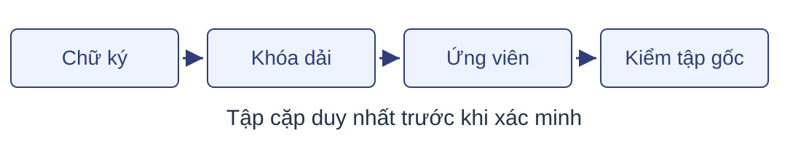
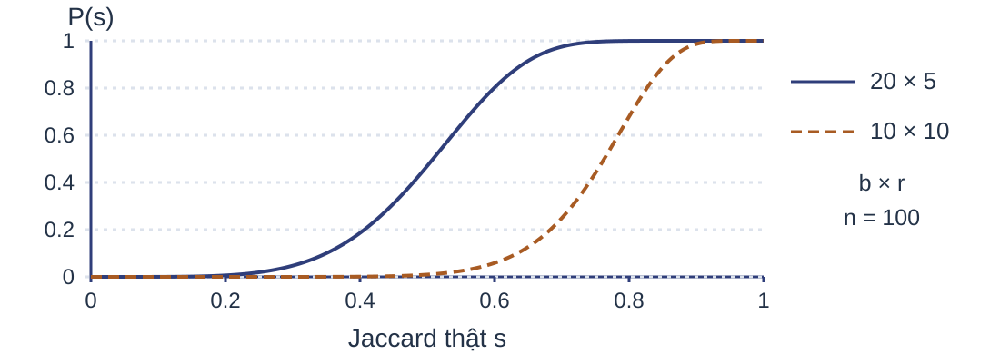
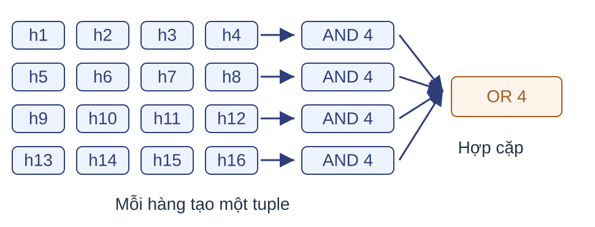
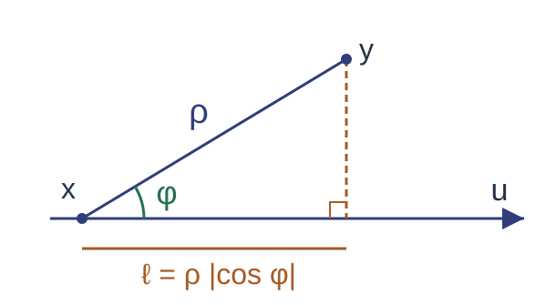
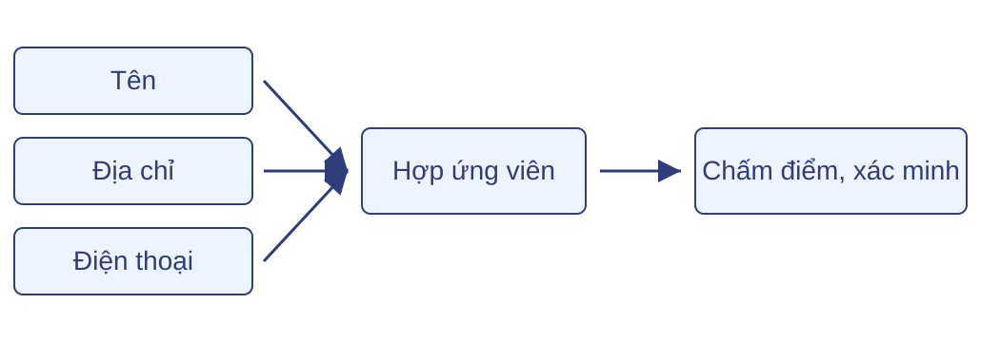

Tìm cặp tương đồng bằng LSH
Băm nhạy cảm theo tính cục bộ (locality-sensitive hashing, LSH) chỉ xác minh cặp cùng thùng (bucket); cặp đạt ngưỡng có thể bị bỏ sót.
Giải thuật nền tảng của Khoa học dữ liệu
Học kỳ 1 · Năm học 2026–2027
Trường Đại học Công nghệ · Đại học Quốc gia Hà Nội
Bài 05 cho chữ ký MinHash với tính chất $\Pr[h(A)=h(B)]=\mathrm{SIM}(A,B)$ khi hoán vị chọn đều và dùng chung cho hai tập. Chữ ký giải quyết việc biểu diễn từng tài liệu, nhưng số cặp cần so vẫn tăng theo bình phương số tài liệu. Bài này tổ chức các phép thử băm để chỉ xác minh một phần nhỏ các cặp, rồi tính xác suất một cặp đạt ngưỡng không vào tập ứng viên.
Nguồn: Mining of Massive Datasets, ấn bản 3, Chương 3, §§3.4–3.8, tr.91–122.
Tiên quyết và quy ước
Nhắc lại: Jaccard của hai tập hữu hạn, không rỗng là $\mathrm{SIM}(A,B)=|A\cap B|/|A\cup B|$.
Nhắc lại: hoán vị $\pi$ chọn đều, dùng chung cho hai tập, cho $\Pr[h_\pi(A)=h_\pi(B)]=\mathrm{SIM}(A,B)$.
Nhắc lại: cột $c$ của $\mathrm{SIG}$ cỡ $n\times C$ là chữ ký của $S_c$; $\widehat s$ là tỷ lệ hàng trùng.
Ký hiệu: $C$ tài liệu với tập $S_1,\ldots,S_C$; cặp $(c,d)$ viết với $c<d$; $s=\mathrm{SIM}(S_c,S_d)$.
Ký hiệu: ngưỡng $t\in[0,1]$; số thập phân dùng dấu phẩy; góc đo bằng radian.
Định lý MinHash là cơ sở của mọi xác suất trong bài: một hàng chữ ký của hai cột trùng với xác suất đúng bằng Jaccard của hai tập gốc. Ma trận $\mathrm{SIG}$ có $n$ hàng, mỗi hàng ứng với một hoán vị, và là đầu vào của khóa dải. Đại lượng $s$ là tính chất của hai tập gốc, còn $\widehat s$ phụ thuộc các hoán vị đã chọn. Bộ tham số có số thập phân viết với dấu chấm phẩy, ví dụ $(0{,}3;\ 0{,}6;\ 0{,}7;\ 0{,}4)$. Ghi chú Bài 05, Mục 2, 6 và 7 trình bày đầy đủ ba kết quả nhắc lại.
Mục tiêu học tập
Lập khóa dải (band), dựng thùng, khử lặp, xác minh cặp ứng viên trên ma trận chữ ký. Tính xác suất thành ứng viên; chọn số dải $b$, số hàng $r$ theo ngưỡng $t$. Kiểm tính nhạy cảm của một họ băm; tính cận sau phép ghép AND và OR. Chạy họ chọn tọa độ, siêu phẳng, chiếu có dịch; nêu giả thiết của từng bảo đảm. Chọn biểu diễn, họ hàm, bước xác minh cho thực thể, vân tay, bản tin. Mục tiêu 1 đòi chạy tay thuật toán phân dải và chứng minh đầu ra đúng trên tập ứng viên. Mục tiêu 2 đòi tính $P_{b,r}(s)=1-(1-s^r)^b$, nghiệm một nửa $s_{1/2}$ của $P_{b,r}(s)=1/2$, và chọn $b$, $r$ cho một ngưỡng $t$ cho trước. Mục tiêu 3 đòi kiểm hai cận của họ $(d_1,d_2,p_1,p_2)$-nhạy cảm và biến đổi chúng qua phép ghép đồng thời (AND) và phép ghép ít nhất một (OR). Mục tiêu 4 đòi chạy ba họ trên dữ kiện của sách và nêu phân phối chọn hàm mà từng bảo đảm cần. Mục tiêu 5 đòi xác định thành phần nào của khung tìm cặp thay đổi trong mỗi ứng dụng. Các câu hỏi cuối mỗi phần, bảy bài trên lớp và bài tập của ghi chú kiểm các mục tiêu này.
Nội dung
Bài toán tìm cặp tương đồng Phân dải chữ ký MinHash Khoảng cách và họ nhạy cảm Các họ băm theo độ đo Ứng dụng tìm cặp tương đồng Tổng kết và tự kiểm tra Bài tập vận dụng Đọc trước: Leskovec, Rajaraman, Ullman, Mining of Massive Datasets (MMDS), ấn bản 3, Chương 3, §§3.4–3.8, tr.91–122.
Bài toán tìm cặp đặt nhu cầu: sau khi có chữ ký, số cặp vẫn tăng bậc hai. Phân dải chia chữ ký thành dải để sinh cặp ứng viên, chứng minh kết quả đúng trên tập ứng viên, rồi tính xác suất và chi phí. Khoảng cách và họ nhạy cảm tách tính chất của MinHash thành một định nghĩa cho mọi độ đo, kèm hai phép ghép. Các họ băm theo độ đo nêu thuật toán tìm cặp với họ nhạy cảm, rồi dựng ba họ cơ sở cho Hamming, góc và Euclid; ba họ cơ sở song song với phần ứng dụng, còn phần ứng dụng dùng lại thuật toán tổng quát cho ba bài toán của sách. Tổng kết thu lại giả thiết, bảo đảm và chi phí; bài tập vận dụng gồm bảy bài của sách.
Vấn đề trung tâm
Nhu cầu: tìm cặp $s\ge t$ trong $10^6$ tài liệu, không xét từng cặp.
Xét cặp trùng một dải; ít bỏ sót cặp gần. AND rồi OR, hàm độc lập: cặp gần gần $1$, cặp xa gần $0$. Hamming, góc, Euclid: họ băm riêng. Ba ứng dụng đổi biểu diễn hoặc họ hàm. Chưa giả thiết phân bố tương đồng: xấu nhất xét mọi cặp. Số $10^6$ tài liệu và khoảng $5\cdot10^{11}$ cặp lấy từ Ví dụ 3.10 của sách. Dòng đầu là phân dải chữ ký: chỉ cặp trùng mọi hàng của ít nhất một dải được xét, và cặp đạt ngưỡng ít bị bỏ sót khi các MinHash độc lập. Dòng thứ hai: phép ghép đồng thời (AND) rồi phép ghép ít nhất một (OR) trên các hàm độc lập đẩy xác suất trùng của cặp gần lên gần 1 và của cặp xa xuống gần 0. Ba ứng dụng là đối sánh thực thể, vân tay và bản tin gần trùng. Dòng cuối là kết luận có điều kiện: chưa có giả thiết về phân bố độ tương đồng thì không có bảo đảm dưới bậc hai; có giả thiết đó thì số cặp phải xác minh được chặn bằng kỳ vọng.
Ví dụ: kho một triệu tài liệu
$C=10^6$ tài liệu; chữ ký $n=250$ thành phần, 4 byte mỗi thành phần.
Tính dung lượng chữ ký, số cặp và thời gian khi mỗi cặp mất $1\,\mu\mathrm{s}$.
Dung lượng chữ ký: $10^6\cdot250\cdot4=10^9$ byte
Số cặp: $\binom{10^6}{2}=499\,999\,500\,000$
Tổng thời gian: $499\,999{,}5$ giây, khoảng $5{,}79$ ngày.
Kết luận: chữ ký $10^9$ byte vừa bộ nhớ; số cặp vẫn tăng bậc hai.
Các số của vấn đề trung tâm được tính ở đây theo Ví dụ 3.10 của sách; thời gian $1\,\mu\mathrm{s}$ mỗi cặp là giả định minh họa, không phải số đo. Tổng thời gian là $499\,999{,}5$ giây, chia cho $86\,400$ giây mỗi ngày được khoảng $5{,}787$ ngày. Chữ ký 1 GB vừa bộ nhớ, nên giới hạn còn lại là số cặp. Nếu bài toán yêu cầu độ tương đồng của mọi cặp thì đầu ra đã có kích thước bậc hai; ở đây chỉ cần những cặp đủ tương đồng.
Nguồn: Mining of Massive Datasets, ấn bản 3, Ví dụ 3.10, tr.92.
Bài toán tìm cặp tương đồng
Đầu vào: các tập $S_1,\ldots,S_C$ hữu hạn, không rỗng; $\mathrm{SIG}$ cỡ $n\times C$; ngưỡng $t\in[0,1]$.
Đầu ra: mọi cặp $c<d$ có $\mathrm{SIM}(S_c,S_d)\ge t$.

Lưu ý: cặp đạt ngưỡng ngoài tập ứng viên là cặp bỏ sót (false negative); nó không được xác minh.
Bộ tạo ứng viên trả tập cặp $\mathcal C$; bước xác minh tính Jaccard gốc cho từng cặp của $\mathcal C$ và giữ cặp đạt $t$ (Định nghĩa 06.1 của ghi chú). Ứng viên giả là cặp của $\mathcal C$ dưới ngưỡng; cặp bỏ sót là cặp đạt ngưỡng nằm ngoài $\mathcal C$. Xác minh cho một cặp là quyết định xác định; việc cặp ấy có vào $\mathcal C$ hay không phụ thuộc các phép thử. Hình là sơ đồ của cả quy trình: phân dải xây hai khối giữa, các họ băm theo độ đo thay khối đầu.
Nguồn: Mining of Massive Datasets, ấn bản 3, §3.4, tr.91–92.
Câu hỏi về bài toán tìm cặp
Nhắc lại: $S_1=\{a,d\}$, $S_4=\{a,c,d\}$; cột chữ ký hai hàng của cả hai là $(1,0)$.
Câu hỏi:
Với $C=10^5$ tài liệu, $1\,\mu\mathrm{s}$ mỗi cặp: tính số cặp, tổng thời gian và số lần giảm so với $C=10^6$. Với $t=2/3$: tính $\widehat s$, $s$ của cặp $S_1$, $S_4$; xác định đại lượng quyết định cặp đạt ngưỡng. Câu 1: $\binom{10^5}{2}=4\,999\,950\,000$ cặp, khoảng $5\,000$ giây, tức gần 1,4 giờ; giảm số tài liệu 10 lần làm số cặp giảm khoảng 100 lần vì số cặp tăng bậc hai. Câu 2: hai hàng chữ ký đều trùng nên $\widehat s=1$; $s=|\{a,d\}|/|\{a,c,d\}|=2/3$. Quyết định dựa trên $s$, Jaccard của hai tập gốc, tính ở bước xác minh; $\widehat s$ chỉ là tỷ lệ trùng của chữ ký đã lấy. Tiêu chí: thấy tăng bậc hai, phân biệt tương đồng thật với ước lượng.
Nguồn: Mining of Massive Datasets, ấn bản 3, Ví dụ 3.10, tr.92; số liệu câu 1–2 là dữ kiện luyện tập.
2. Phân dải chữ ký MinHashMuốn chỉ xác minh một phần nhỏ các cặp, phải gom các cột giống nhau vào cùng thùng.
Khóa dải · Cặp ứng viên · Xác minh · Đường cong S · Chi phí phát cặp
Ma trận chữ ký $\mathrm{SIG}$ cỡ $n\times C$, định lý MinHash và ngưỡng $t$ đã có; kho một triệu tài liệu vẫn còn khoảng $5\cdot10^{11}$ cặp. Chữ ký được chia thành $b$ dải, mỗi dải $r$ hàng; các cột cùng khóa dải vào một thùng, các cặp trong thùng được hợp, khử lặp rồi xác minh bằng Jaccard gốc. Phần này chứng minh tính đúng của thủ tục, tính xác suất thành ứng viên và đếm chi phí. Tập ứng viên $\mathcal C$, công thức $P_{b,r}(s)=1-(1-s^r)^b$ và hai đại lượng $Q$, $K$ được dùng lại khi khái quát sang họ nhạy cảm.
Dải, khóa dải và cặp ứng viên
Nhu cầu: chữ ký vừa bộ nhớ nhưng còn $\binom C2$ cặp.
Ví dụ. Cột 2 và 4 cùng bộ $(0,2,1)$ ở dải đầu.
Trực quan. Cột càng tương đồng càng dễ trùng ít nhất một dải.
Chia $n=br$ hàng thành $b$ dải, $r$ hàng. Trùng dải: cùng bộ $r$ giá trị có thứ tự (tuple). Trùng ít nhất một dải: cặp ứng viên (candidate pair). Dòng ví dụ lấy hai cột của Ví dụ 3.11; ví dụ năm cột chạy đầy đủ dải đầu. Theo §3.4.1, cách tiếp cận chung là băm mỗi đối tượng nhiều lần sao cho đối tượng tương đồng dễ vào cùng thùng hơn; cặp vào cùng thùng ở ít nhất một lần băm là cặp ứng viên. Với chữ ký MinHash, mỗi dải là một lần băm. Khóa của cột $c$ ở dải $j$ là $(j,\text{tuple})$; mỗi dải có một bảng thùng riêng, nên cùng bộ giá trị ở hai dải khác nhau không vào cùng thùng. Trùng mọi hàng trong một dải là phép ghép đồng thời; nhận cặp khi trùng ít nhất một dải là phép ghép ít nhất một. So hai tuple rẻ hơn nhiều so với đọc hai tập gốc.
Nguồn: Mining of Massive Datasets, ấn bản 3, §3.4.1, tr.92–93.
Ví dụ: năm cột, dải ba hàng
Dải đầu của chữ ký $n=12$, $b=4$, $r=3$; xác định các cặp trùng dải.
Dải đầu Cột 1 Cột 2 Cột 3 Cột 4 Cột 5 Hàng 1 1 0 0 0 2 Hàng 2 3 2 1 2 2 Hàng 3 0 1 3 1 1
Kết luận: cột 2, 4 là cặp ứng viên; cột 2, 5 trùng hai hàng nhưng chưa trùng dải.
Ví dụ 3.11: cột 2 và 4 có cùng tuple $(0,2,1)$ ở dải đầu nên chắc chắn vào cùng thùng của dải này và thành cặp ứng viên, bất kể ba dải còn lại. Sách giả định có rất nhiều thùng, nên hai tuple khác nhau gần như không va chạm; từ đây xem hai cột cùng thùng khi và chỉ khi tuple bằng nhau. Hình 3.7 chỉ cho dải đầu; chín hàng còn lại chưa có dữ kiện, nên cột 2 và 5, hay cột 2 và 3, vẫn có thể thành ứng viên nếu trùng một trong ba dải chưa được cho.
Nguồn: Mining of Massive Datasets, ấn bản 3, Hình 3.7, Ví dụ 3.11, tr.93.
Ví dụ: bốn tập đặc trưng
$S_1=\{a,d\},\quad S_2=\{c\},\quad S_3=\{b,d,e\},\quad S_4=\{a,c,d\}$
Hàng $S_1$ $S_2$ $S_3$ $S_4$ 1 1 3 0 1 2 0 2 0 0
$b=2,\quad r=1,\quad t=2/3$
Lập khóa dải, thùng, tập ứng viên và kết quả.
Khóa của cột $c$ ở dải $j$ là $(j,\text{tuple})$; mỗi dải một bảng thùng.
Bốn tập và hai hàng chữ ký thuộc Ví dụ 3.8 của sách, đã dùng ở Bài 05. Hai hàm MinHash cố định chỉ dùng để chạy thuật toán; định lý xác suất thành ứng viên xét mô hình hoán vị chọn đều, độc lập. Với một hàng mỗi dải, tuple có một thành phần, nên khóa của cột 1 ở dải 1 là $(1,(1))$. Cấu hình $r=1$ làm phép hợp qua hai dải hiện rõ trong vết chạy; điều kiện trùng cả tuple trong một dải được kiểm ở câu hỏi cuối phần với $b=1$, $r=2$. Bộ dữ liệu này được dùng lại cho thuật toán, tính đúng và chi phí.
Nguồn: Mining of Massive Datasets, ấn bản 3, Ví dụ 3.8, tr.85–86; áp dụng §3.4.1.
Ví dụ: bốn tập đặc trưng, thùng của dải 1
Giá trị ở dải 1 của tài liệu 1, 2, 3, 4 là $1$, $3$, $0$, $1$.
Khóa dải 1 Tài liệu Cặp phát $(1,(1))$ 1, 4 $(1,4)$ $(1,(3))$ 2 không có $(1,(0))$ 3 không có
Kết luận: dải 1 phát đúng một cặp $(1,4)$; thùng đơn không phát cặp.
Lượt chèn tài liệu 1 tạo danh sách tại khóa $(1,(1))$; lượt chèn tài liệu 4 tìm thấy khóa này và nối vào cùng danh sách. Sau bốn lượt chèn, mỗi tài liệu xuất hiện đúng một lần trong thùng của nó ở dải 1. Số 1 đầu khóa là chỉ số dải, khác giá trị chữ ký 1 ở thành phần thứ hai.
Nguồn: Mining of Massive Datasets, ấn bản 3, §3.4.1, tr.92–93; dữ kiện Ví dụ 3.8.
Ví dụ: bốn tập đặc trưng, hợp qua hai dải
Khóa dải 2 Tài liệu Cặp phát $(2,(0))$ 1, 3, 4 $(1,3)$, $(1,4)$, $(3,4)$ $(2,(2))$ 2 không có
Dải 1 đã phát $(1,4)$; số lượt phát trước khử lặp là $Q=1+3=4$.
$\mathcal C=\{(1,3),(1,4),(3,4)\}$
Số cặp phân biệt là $K=|\mathcal C|=3$.
Kết luận: cặp $(1,4)$ phát hai lần nhưng chỉ xác minh một lần.
$Q$ đếm lượt phát trước khử lặp; $K$ đếm cặp phân biệt. Một cặp được sinh ở nhiều dải vẫn chỉ được xác minh một lần khi các cặp được lưu trong một tập. Khóa có số dải nên giá trị 0 ở dải 1 của tài liệu 3 không ghép với giá trị 0 ở dải 2.
Nguồn: Mining of Massive Datasets, ấn bản 3, §3.4.1–3, tr.92–96.
Ví dụ: bốn tập đặc trưng, xác minh
Giữ cặp có Jaccard gốc ít nhất $t=2/3$.
Cặp Giao Hợp Jaccard Kết quả $(1,3)$ $\{d\}$ $\{a,b,d,e\}$ $1/4$ Loại $(1,4)$ $\{a,d\}$ $\{a,c,d\}$ $2/3$ Giữ $(3,4)$ $\{d\}$ $\{a,b,c,d,e\}$ $1/5$ Loại
Cặp dưới ngưỡng vẫn thành ứng viên gọi là ứng viên giả (false positive).
Kết luận: kết quả là $\{(1,4)\}$; $(1,3)$ và $(3,4)$ là ứng viên giả.
Ứng viên giả xuất hiện ở tầng tạo cặp và bị loại ở bước xác minh, nên chỉ làm tăng chi phí. Cặp $(1,4)$ có $\widehat s=1$ trên hai hàng chữ ký nhưng Jaccard gốc là $2/3$; quyết định dựa trên Jaccard gốc. Xác minh chỉ loại ứng viên giả; nó không khôi phục cặp đạt ngưỡng chưa được sinh.
Nguồn: Mining of Massive Datasets, ấn bản 3, §3.4.3, tr.95–96.
Thuật toán: phân dải và xác minh
Đầu vào: $\mathrm{SIG}$ cỡ $n\times C$; $b,r$ nguyên dương, $n=br$; các tập $S_1,\ldots,S_C$ hữu hạn, không rỗng; ngưỡng $t\in[0,1]$.
Khóa dải $k_{j,c}=\bigl(j,\mathrm{SIG}_{(j-1)r+1:jr,\,c}\bigr)$
Tập ứng viên là $\mathcal C=\{(c,d):c<d,\ \exists j:\ k_{j,c}=k_{j,d}\}$.
Đầu ra: $\{(c,d)\in\mathcal C:\ \mathrm{SIM}(S_c,S_d)\ge t\}$.
Ký hiệu $\mathrm{SIG}_{(j-1)r+1:jr,\,c}$ chỉ các hàng $(j-1)r+1$ đến $jr$ của cột $c$, tức tuple của cột $c$ ở dải $j$. Hàm băm của bảng chỉ định nơi tra cứu; phép bằng vẫn so cả số dải và tuple. Điều kiện tồn tại một dải giải thích phép hợp ứng viên. Đầu ra dùng thứ tự $c<d$ để hai cách gọi một cặp có cùng biểu diễn. Các tập $S_c$ hữu hạn, không rỗng để Jaccard xác định. Đặc tả chưa nói mọi cặp đạt ngưỡng đều nằm trong $\mathcal C$; khả năng bỏ sót được phân tích ở các trang xác suất.
Nguồn: Mining of Massive Datasets, ấn bản 3, §§3.4.1, 3.4.3, tr.92–96.
Thuật toán: phân dải và xác minh
B ← từ điển rỗng; CAND ← tập rỗng
với j = 1,…,b và c = 1,…,C:
z ← bản sao SIG[(j−1)r+1 : jr, c]
k ← (j, z)
nếu k chưa có trong B: B[k] ← []
B[k].append(c)
với mỗi danh sách L trong B:
với mỗi c < d thuộc L: CAND.add((c,d))
OUT ← tập rỗng
với mỗi (c,d) trong CAND:
nếu SIM(S_c,S_d) ≥ t: OUT.add((c,d))
trả OUTVết chạy ${b=2,\ r=1}$
$bC=8$ lượt chèn
$Q=4$ lượt phát cặp
$K=3$ lần kiểm Jaccard
1 cặp kết quả
Thao tác quyết định là nối mã tài liệu vào danh sách của khóa dải của nó; vòng phát cặp chỉ xét các cặp nằm chung một danh sách, nên thuật toán không duyệt mọi cặp của kho. Khi khóa chưa có, thuật toán tạo danh sách rỗng rồi mới nối mã tài liệu; khóa được sao chép để phân tích bộ nhớ thống nhất. Tập CAND khử lặp sau mỗi lần phát. Khung còn để ngỏ hai câu hỏi: kết quả có đúng trên $\mathcal C$ không, và cặp đạt ngưỡng vào $\mathcal C$ với xác suất nào. Thuật toán bỏ bước 6 kiểm chữ ký của sách và kiểm Jaccard gốc trên mọi ứng viên; trong sách, bước 7 kiểm gốc được ghi là tùy chọn.
Nguồn: Mining of Massive Datasets, ấn bản 3, §§3.4.1, 3.4.3, tr.92–96.
Tính đúng: phân dải và xác minh
Mệnh đề. Với $\mathrm{SIG}$ cố định, đầu ra là các cặp $s\ge t$ của $\mathcal C$.
Bất biến: danh sách khóa $(j,z)$ bằng tập cột đã chèn ở dải $j$ có tuple $z$.
Bước Lập luận Khởi tạo Chưa có khóa mang $j$, chưa chèn cột nào. Duy trì Tạo danh sách nếu khóa mới; nối cột vào. Kết thúc Chung danh sách khi và chỉ khi chung khóa.
Ở đầu mỗi dải $j$, chưa có khóa mang chỉ số $j$ vì số dải nằm trong khóa, còn các danh sách của những dải trước giữ nguyên; chưa có cột nào được chèn ở dải $j$ nên cả hai vế của bất biến là tập rỗng. Khi chèn cột $c$, khóa được tính đúng từ các hàng của dải; nếu khóa mới, danh sách rỗng được tạo trước, nếu khóa đã có, các cột trước đó được giữ; danh sách của khóa này thêm đúng cột $c$, các danh sách khác không đổi. Nối $c$ chỉ chạm danh sách của khóa của nó vì bảng so khóa đầy đủ. Khi dựng thùng kết thúc, danh sách của khóa $(j,z)$ là đúng tập các cột có tuple $z$ ở dải $j$, nên hai cột chung danh sách khi và chỉ khi trùng một khóa dải.
Nguồn: Mining of Massive Datasets, ấn bản 3, §§3.4.1, 3.4.3, tr.92–96.
Tính đúng: phân dải và xác minh
Vòng phát cặp xét mọi danh sách; CAND khử lặp nên bằng $\mathcal C$.
Vòng xác minh giữ đúng các cặp của $\mathcal C$ có Jaccard ít nhất $t$ (Mệnh đề 06.5).
Điều kiện dừng: các vòng lặp duyệt tập hữu hạn.
Trường hợp biên: $C<2$ hoặc thùng dưới hai phần tử không phát cặp.
Lưu ý: cặp ngoài $\mathcal C$ không được xác minh dù đạt ngưỡng.
Vòng phát cặp thêm $(c,d)$ vào CAND đúng khi hai mã tài liệu chung một danh sách; CAND là tập nên một cặp chung nhiều dải chỉ có mặt một lần. Theo bất biến của vòng chèn, CAND trùng với $\mathcal C$. Jaccard xác định vì các tập hữu hạn, không rỗng; tập rỗng nằm ngoài đặc tả. Vòng chèn có $bC$ lượt và CAND có không quá $\binom C2$ cặp, nên thuật toán dừng. Kết luận chỉ nói về các cặp trong $\mathcal C$; xác suất một cặp đạt ngưỡng nằm ngoài $\mathcal C$ là nội dung của định lý kế tiếp.
Nguồn: Mining of Massive Datasets, ấn bản 3, §§3.4.1, 3.4.3, tr.92–96.
Xác suất trùng một dải
Nhu cầu: tính đúng chỉ xét cặp trong $\mathcal C$; cần xác suất cặp vào $\mathcal C$.
Giả thiết: cặp tập cố định có Jaccard $s$; các MinHash lý tưởng chọn đều, độc lập.
Ví dụ. $s=0{,}8$, $r=5$: năm hàng cùng trùng với xác suất $0{,}8^5=0{,}32768$, không trùng dải $0{,}67232$.
Gọi $E_i$ là biến cố hai cột trùng ở hàng $i$ của dải; $\Pr(E_i)=s$.
$\Pr(E_1\cap\cdots\cap E_r)=s^r$
Tính độc lập thuộc các lần chọn hoán vị, không thuộc các cặp dữ liệu; cặp được cố định trước khi chọn. Hai hàm cố định của ví dụ bốn tập không được dùng để suy công thức này. Giá trị $s=0{,}8$ là Jaccard thật, không là tỷ lệ trùng của một chữ ký quan sát. Phép nhân xác suất dùng độc lập giữa các hàng trong dải; định lý xác suất thành ứng viên dùng thêm độc lập giữa các dải.
Nguồn: Mining of Massive Datasets, ấn bản 3, §3.4.2, tr.93–94.
Xác suất thành ứng viên
Định lý. Nếu các dải dùng những MinHash độc lập thì cặp có Jaccard $s$ thành ứng viên với xác suất
$P_{b,r}(s)=1-(1-s^r)^b$
Chứng minh. Không dải nào trùng với xác suất $(1-s^r)^b$; lấy biến cố bù.
Ví dụ. Với $b=20$, $r=5$, cặp $s=0{,}8$ bị bỏ sót với xác suất khoảng $0{,}00036$ (Định lý 06.7).
Mỗi dải trùng với xác suất $s^r$ và không trùng với xác suất $1-s^r$; độc lập giữa các dải cho xác suất không dải nào trùng là $(1-s^r)^b$. Với $b=20$, $r=5$, $s=0{,}8$: $(0{,}67232)^{20}\approx0{,}000356$, nên $P_{20,5}(0{,}8)\approx0{,}999644$; sách làm tròn thành khoảng 1 trên 3 000 cặp bị bỏ sót. Đây là xác suất theo một cặp, không cần các cặp khác nhau độc lập. Nếu mọi dải dùng lại cùng $r$ hoán vị, xác suất chỉ còn $s^r$.
Nguồn: Mining of Massive Datasets, ấn bản 3, §3.4.2, tr.93–95.
Đường cong S và chọn số dải

Đường cong S (S-curve) với $b=20$, $r=5$: nghiệm một nửa $s_{1/2}\approx0{,}509$; xấp xỉ $(1/b)^{1/r}\approx0{,}549$.
Tại $s=0{,}8$: cấu hình $b=20$, $r=5$ bỏ sót khoảng $0{,}036\%$, cấu hình $b=r=10$ khoảng $32\%$.
Kết luận: chọn $b,r$ để $s_{1/2}\approx(1/b)^{1/r}$ gần $t$; thấp hơn $t$ để ít bỏ sót, cao hơn $t$ để ít ứng viên giả.
Đường $P_{b,r}(s)$ có dạng chữ S khi $b\ge2$ và $r\ge2$: thấp ở Jaccard nhỏ, tăng dốc quanh nghiệm một nửa rồi gần 1; với $b=1$ đường $s^r$ lồi, với $r=1$ đường $1-(1-s)^b$ lõm. Phương trình $P(s)=1/2$ cho $s^r=1-2^{-1/b}$, nên nghiệm một nửa là $s_{1/2}=(1-2^{-1/b})^{1/r}$ (Mệnh đề 06.9); giá trị $(1/b)^{1/r}$ chỉ xấp xỉ nghiệm này, và cả hai khác ngưỡng chấp nhận $t$ do bài toán đặt. Hai cấu hình trong hình cùng dùng 100 hàng. Tại $s=0{,}8$, xác suất bỏ sót là $(1-0{,}8^5)^{20}\approx0{,}000356$ và $(1-0{,}8^{10})^{10}\approx0{,}321$. Đây là xác suất theo từng cặp, không phải tỷ lệ lỗi của một kho chưa biết phân bố tương đồng. Quy tắc chọn tham số lấy từ §3.4.3.
Nguồn: Mining of Massive Datasets, ấn bản 3, Ví dụ 3.12, tr.94–95; §3.4.3, tr.95.
Chi phí: phân dải và xác minh
Mô hình: $\mathrm{SIG}$ và tập gốc đã sắp xếp nằm trong bộ nhớ chính; mỗi mã tài liệu một từ máy.
Tuple dài $r$ tốn $O(r)$; bảng băm kỳ vọng $O(1)$; $u_{j,z}$ là số mã tài liệu trong thùng $(j,z)$.
Bước Số lần Chi phí mỗi lần Đóng góp Dựng thùng $bC$ $O(r)$ kỳ vọng $bC\cdot O(r)=O(nC)$ Phát và khử lặp $Q=\sum_{j,z}\binom{u_{j,z}}2$ $O(1)$ kỳ vọng $Q\cdot O(1)=O(Q)$ Xác minh $K=|\mathcal C|$ $T_J(c,d)$ $\sum_{(c,d)\in\mathcal C}T_J(c,d)$
Thời gian kỳ vọng $O(nC+Q+\sum T_J)$, $T_J$ là thời gian tính Jaccard (Mệnh đề 06.11).
Dựng thùng xử lý $bC$ tuple, mỗi tuple dài $r$, nên tốn $O(brC)=O(nC)$. Phát cặp tốn một thao tác cho mỗi trong $Q$ lượt, kể cả lượt phát lại; một thùng cỡ $u$ phát $\binom u2$ cặp. Xác minh tính Jaccard cho $K$ cặp phân biệt; nếu các tập được lưu theo thứ tự tăng, phép trộn hai dãy cho $T_J(c,d)=O(|S_c|+|S_d|)$. Kỳ vọng lấy theo hàm băm của bảng, không theo dữ liệu. Nếu tập gốc nằm trên đĩa, xác minh cần $2K$ lần đọc ngẫu nhiên. Bước 6 của quy trình §3.4.3 lọc ứng viên theo tỷ lệ trùng chữ ký trước khi đọc tập gốc: giảm số lần đọc, đổi lại có thể thêm cặp bỏ sót khi $\widehat s<t\le s$. Bài này bỏ bước 6 và luôn xác minh bằng Jaccard gốc.
Nguồn: Mining of Massive Datasets, ấn bản 3, §3.4; phân tích chi phí từ thủ tục phân dải.
Chi phí: bộ nhớ và trường hợp xấu nhất
Bộ nhớ phụ $O(nC+K)$, ngoài $\mathrm{SIG}$ và tập gốc đầu vào.
Kỳ vọng (Mệnh đề 06.13): ${\mathbb E[K]=\sum_{c<d}P_{b,r}(s_{cd})}$, ${\mathbb E[Q]=b\sum_{c<d}s_{cd}^r}$.
Xấu nhất, mọi cột chung thùng ở mọi dải:
$Q=b\binom C2,\qquad K=\binom C2$
Kết luận: phân dải không giảm bậc hai vô điều kiện; $Q$, $K$ phụ thuộc phân bố tương đồng.
Khóa sao chép chiếm tối đa $nC$ từ, các danh sách thùng chứa $bC$ mã tài liệu, tập cặp chứa $K$ phần tử. Trường hợp xấu nhất xảy ra chẳng hạn khi mọi tài liệu giống hệt nhau: mỗi dải có một thùng cỡ $C$. Với kho một triệu tài liệu, khi đó $K=499\,999\,500\,000$, đúng số cặp ban đầu. Trong mô hình MinHash độc lập, với $s_{cd}=\mathrm{SIM}(S_c,S_d)$, tuyến tính kỳ vọng cho hai công thức trên mặt trang, không cần các cặp độc lập: mỗi cặp đóng góp xác suất thành ứng viên của nó vào $\mathbb E[K]$ và $b\,s_{cd}^r$ vào $\mathbb E[Q]$. Với bốn tập đặc trưng, vết chạy cho $bC=8$, $Q=4$, $K=3$.
Nguồn: Mining of Massive Datasets, ấn bản 3, §3.4; phân tích chi phí từ thủ tục phân dải.
Câu hỏi về phân dải
Câu hỏi: $S_1=\{a,d\}$, $S_2=\{c\}$, $S_3=\{b,d,e\}$, $S_4=\{a,c,d\}$
Hàng $S_1$ $S_2$ $S_3$ $S_4$ 1 1 3 0 1 2 0 2 0 0
Với $b=1$, $r=2$, $t=2/3$: tính $Q$, $K$ và tập kết quả. Viết $P_{2,1}(s)$, $P_{1,2}(s)$; tính tại $s=1/4$ và $s=2/3$. Giải thích vì sao vết chạy với hai hàm cố định không chứng minh được hai công thức đó. Câu 1: một dải hai hàng cho các tuple $(1,0)$, $(3,2)$, $(0,0)$, $(1,0)$; chỉ cột 1 và 4 chung thùng, nên $Q=K=1$ và $(1,4)$ đạt ngưỡng $2/3$. So với $b=2,r=1$ ($K=3$), đòi trùng cả hai hàng đã loại hai ứng viên giả. Câu 2: $P_{2,1}(s)=1-(1-s)^2$, $P_{1,2}(s)=s^2$; tại $s=1/4$ là $7/16$ và $1/16$; tại $s=2/3$ là $8/9$ và $4/9$. Cấu hình một dải hai hàng nhận ít cặp xa hơn nhưng cũng bỏ sót cặp gần nhiều hơn. Câu 3: công thức là xác suất trên cách chọn ngẫu nhiên các MinHash; một bộ hàm cố định chỉ cho một kết quả xác định trên dữ liệu đã cho. Tiêu chí: tính đúng tuple hai hàng, phân biệt $Q$ và $K$, nêu đúng nguồn ngẫu nhiên. Ghi chú bài giảng: Bài tập 06.2 và 06.3.
Nguồn: Mining of Massive Datasets, ấn bản 3, Ví dụ 3.8; §3.4.2.
3. Khoảng cách và họ nhạy cảmMuốn dùng phân dải ngoài Jaccard, phải có độ đo, họ băm hợp với độ đo và phép ghép tách cặp gần, cặp xa.
Tiên đề khoảng cách · Bốn độ đo · Họ nhạy cảm · AND, OR
Phân dải dùng MinHash, nên chỉ phục vụ Jaccard trên tập; xác suất trùng một hàng bằng $s$. Phần này định nghĩa độ đo khoảng cách, tính các độ đo trên ví dụ của sách, rồi phát biểu họ $(d_1,d_2,p_1,p_2)$-nhạy cảm và hai phép ghép AND, OR. Định nghĩa họ, công thức biến đổi bộ tham số qua phép ghép và nhận xét phân dải là AND $r$ rồi OR $b$ trên họ MinHash là nền cho các họ băm theo độ đo và cho ứng dụng vân tay.
Độ đo khoảng cách
Nhu cầu: phân dải dùng MinHash nên chỉ phục vụ Jaccard trên tập.
Ví dụ. $x=(2,7)$, $y=(6,4)$; độ lệch theo hai trục là $4$ và $3$.
Tổng độ lệch: $4+3=7$.
Độ dài đoạn thẳng: $\sqrt{4^2+3^2}=5$.
Độ lệch lớn nhất: $\max(4,3)=4$.
Kết luận: cùng hai điểm, ba độ đo cho ba giá trị.
Với vector hay chuỗi, Jaccard không còn áp dụng; cần một độ đo xác định ý nghĩa của "gần", và một phép băm hợp với độ đo ấy. Đoạn thẳng nối hai điểm cho khoảng cách Euclid; đường đi theo hai trục có tổng độ dài 7; độ lệch lớn nhất bằng 4. Ba giá trị mô tả ba cách đo, không phải ba ước lượng của cùng một đại lượng, nên ngưỡng "gần" chỉ có nghĩa khi đã chọn độ đo.
Nguồn: Mining of Massive Datasets, ấn bản 3, Ví dụ 3.13, tr.98.
Độ đo khoảng cách và chuẩn vector
Định nghĩa. Khoảng cách trên miền $X$ là hàm $d:X\times X\to\mathbb R_{\ge0}$ thỏa, với mọi $x,y,w$:
$d(x,y)=0\iff x=y$; $\quad d(x,y)=d(y,x)$;
$d(x,w)\le d(x,y)+d(y,w)$.
Chuẩn $L_q$ trên $\mathbb R^D$, với $q\ge1$:
$\|x-y\|_q=\Bigl(\sum_{i=1}^D|x_i-y_i|^q\Bigr)^{1/q},\qquad\|x-y\|_\infty=\max_i|x_i-y_i|$
Nhận xét. Ba độ đo của ví dụ hai điểm là $L_1$, $L_2$ (Euclid), $L_\infty$.
Ba tiên đề nói rằng khoảng cách tách được hai điểm khác nhau, không phụ thuộc thứ tự cặp, và đường trực tiếp không dài hơn đường qua một điểm thứ ba. Với $q\ge1$, bất đẳng thức tam giác của $\|\cdot\|_q$ là bất đẳng thức Minkowski, được dùng theo MMDS §3.5.2 mà không chứng minh lại. Điều kiện $q\ge1$ cần thiết: với $q=1/2$, ba điểm $(0,0)$, $(1,0)$, $(1,1)$ cho $4>1+1$ (Định nghĩa 06.14 trong ghi chú).
Nguồn: Mining of Massive Datasets, ấn bản 3, §3.5.1–2, tr.97–98.
Khoảng cách Jaccard
Định nghĩa. Trên tập hữu hạn, không rỗng, khoảng cách Jaccard là $d_J(A,B)=1-\mathrm{SIM}(A,B)$.
Mệnh đề. $d_J$ là khoảng cách trên các tập hữu hạn, không rỗng (Mệnh đề 06.15).
Theo định lý MinHash, $d_J(A,B)=\Pr[h(A)\ne h(B)]$; ví dụ $d_J(S_1,S_4)=1/3$.
$\{h(A)\ne h(W)\}\subseteq\{h(A)\ne h(B)\}\cup\{h(B)\ne h(W)\}$
$d_J(A,W)\le d_J(A,B)+d_J(B,W)$
Chứng minh. Bao hàm biến cố rồi chặn hợp; không cần độc lập.
Bao hàm biến cố đúng vì nếu $h(A)=h(B)$ và $h(B)=h(W)$ thì $h(A)=h(W)$; cùng một MinHash lý tưởng $h$ được dùng cho ba tập. Lấy xác suất hai vế và dùng chặn hợp cho bất đẳng thức tam giác; chặn hợp không cần hai biến cố ở vế phải độc lập. Cặp $S_1$, $S_4$ có Jaccard $2/3$ nên khoảng cách $1/3$. Các tiên đề còn lại theo định nghĩa giao, hợp trên tập không rỗng. Khoảng cách Jaccard bằng xác suất hai giá trị MinHash khác nhau; quan hệ này là mẫu cho định nghĩa họ nhạy cảm.
Nguồn: Mining of Massive Datasets, ấn bản 3, §3.5.3, tr.98–99.
Khoảng cách góc
Định nghĩa. Với $x,y\ne0$, khoảng cách góc trên các hướng (vector đơn vị) là ${\theta(x,y)=\arccos\dfrac{x\cdot y}{\|x\|_2\|y\|_2}\in[0,\pi]}$.
Ví dụ. $x=(1,2,-1)$, $y=(2,1,1)$:
Đại lượng Giá trị Tích vô hướng và chuẩn $x\cdot y=3$, $\|x\|_2=\|y\|_2=\sqrt6$ Góc $\cos\theta=1/2$, $\theta=\pi/3=60^\circ$
Lưu ý: độ tương đồng cosin (cosine similarity) là $\cos\theta=1/2$; khoảng cách góc là $\pi/3$.
Góc chỉ phụ thuộc hướng: $x$ và $2x$ có góc 0 dù là hai vector khác nhau, nên góc là khoảng cách trên các hướng, hay các vector đơn vị; vector 0 không có hướng. MMDS gọi khoảng cách này là cosine distance, dù giá trị là góc, khác $1-\cos\theta$; ở ví dụ cả $\cos\theta$ lẫn $1-\cos\theta$ đều bằng $1/2$, còn góc bằng $\pi/3$. Hai vector đối hướng có góc $\pi$. Bất đẳng thức tam giác có phác thảo hình học: trên mặt cầu đơn vị, góc là độ dài cung ngắn nhất nối hai hướng, và đường qua hướng thứ ba không ngắn hơn. Phép băm dấu dùng đúng góc này.
Nguồn: Mining of Massive Datasets, ấn bản 3, Ví dụ 3.14, tr.99.
Khoảng cách chỉnh sửa
Định nghĩa. Khoảng cách chỉnh sửa (edit distance) là số lần chèn, xóa ký tự ít nhất biến $x$ thành $y$.
Ví dụ. abcde → acfdeg: xóa b, chèn f, chèn g.
Mệnh đề. Với chèn và xóa, $d(x,y)=|x|+|y|-2L$, $L$ là độ dài dãy con chung dài nhất (Mệnh đề 06.19).
Dãy con chung dài nhất, không cần liên tiếp, là acde, nên $d=5+6-2\cdot4=3$.
Một phương án tối ưu giữ một dãy con chung và xóa, chèn các ký tự khác: giữ $L$ ký tự cần $|x|-L$ lần xóa và $|y|-L$ lần chèn. Ngược lại, các ký tự không bị xóa tạo thành dãy con chung nên không giữ quá $L$; hai cận trùng nhau. Đây là lập luận giá trị tối ưu, không cung cấp thuật toán tính dãy con chung dài nhất (longest common subsequence). Định nghĩa của MMDS không có phép thay ký tự; khoảng cách Levenshtein, có thêm phép thay, cho giá trị khác. Chương 3 của MMDS không xây họ băm riêng cho khoảng cách chỉnh sửa; độ đo này dùng để so với Hamming và quay lại ở bước chấm điểm của đối sánh thực thể.
Nguồn: Mining of Massive Datasets, ấn bản 3, Ví dụ 3.15–16, tr.100.
Khoảng cách Hamming
Chỉ số 1 2 3 4 5 $x$ 1 0 1 0 1 $y$ 1 1 1 1 0 So sánh Trùng Khác Trùng Khác Khác
Khoảng cách Hamming là số vị trí khác nhau của hai vector cùng chiều:
$d_H(x,y)=\sum_{i=1}^D\mathbf1[x_i\ne y_i]=3$
Ký hiệu: $\mathbf1[E]$ bằng 1 khi $E$ đúng, bằng 0 khi $E$ sai.
Nếu $x_i\ne z_i$ thì ít nhất một trong hai điều $x_i\ne y_i$, $y_i\ne z_i$ đúng; cộng theo tọa độ cho bất đẳng thức tam giác. Hamming so cùng vị trí, còn khoảng cách chỉnh sửa cho phép dời căn chỉnh bằng chèn hoặc xóa. Trên vector đặc, Hamming, chuẩn và góc đều tính được trong một lượt qua $D$ tọa độ; đó là chi phí của một cặp, chưa giải bài toán tìm cặp trên toàn kho.
Nguồn: Mining of Massive Datasets, ấn bản 3, Ví dụ 3.17, tr.101.
Họ băm nhạy cảm theo tính cục bộ
Nhu cầu: với MinHash, $d_J\le0{,}3$ cho trùng ít nhất $0{,}7$, $d_J\ge0{,}6$ cho trùng nhiều nhất $0{,}4$; cần hai cận ấy cho độ đo khác.
Định nghĩa. Với $0\le d_1<d_2$, $0\le p_2<p_1\le1$, họ $\mathcal H$ là $(d_1,d_2,p_1,p_2)$-nhạy cảm (locality-sensitive family) nếu với mọi $x,y$:
${d(x,y)\le d_1\ \Rightarrow\ \Pr[h(x)=h(y)]\ge p_1}$
${d(x,y)\ge d_2\ \Rightarrow\ \Pr[h(x)=h(y)]\le p_2}$
Xác suất lấy theo cách chọn $h$, cùng $h$ cho hai đối tượng; miền giữa không được bảo đảm (Định nghĩa 06.22).
Độ đo xác định cặp gần và xa; một họ băm phải có phân phối chọn hàm và hai cận xác suất tương ứng. Nguồn ngẫu nhiên là phép lấy $h$ từ họ; với dữ liệu và $h$ đã cố định, kết quả trùng là xác định. Định nghĩa chỉ đòi hai cận, không đòi đẳng thức giữa xác suất va chạm và một độ tương đồng như MinHash. Băm hai đối tượng bằng hai hàm chọn riêng thì biến cố trùng không còn đo khoảng cách.
Nguồn: Mining of Massive Datasets, ấn bản 3, §3.6.1, tr.103–104.
Ví dụ: họ MinHash theo Jaccard
Theo định lý MinHash, $\Pr[h(A)=h(B)]=1-d_J(A,B)$.
Nếu $d_J\le0{,}3$ thì xác suất trùng ít nhất $0{,}7$.
Nếu $d_J\ge0{,}6$ thì xác suất trùng nhiều nhất $0{,}4$.
Vậy họ MinHash là $(0{,}3;\ 0{,}6;\ 0{,}7;\ 0{,}4)$-nhạy cảm.
Kết luận: họ MinHash là $(d_1,d_2,1-d_1,1-d_2)$-nhạy cảm với mọi $0\le d_1<d_2\le1$ (Hệ quả 06.23).
Hàm $d\mapsto1-d$ giảm, nên miền gần cho cận dưới còn miền xa cho cận trên. Với họ MinHash, xác suất trùng của mỗi cặp bằng đúng $1-d_J$; các họ theo độ đo nói chung chỉ cho cận. Hai ngưỡng không quyết định hành vi trong miền giữa: cặp $S_1$, $S_4$ có $d_J=1/3$, nằm giữa $0{,}3$ và $0{,}6$, nên định nghĩa không cho bảo đảm nào cho nó dù xác suất thật là $2/3$. Bộ tham số $(0{,}3;\ 0{,}6;\ 0{,}7;\ 0{,}4)$ là Ví dụ 3.18 của sách.
Nguồn: Mining of Massive Datasets, ấn bản 3, Ví dụ 3.18, tr.105.
Phép ghép đồng thời
Nhu cầu: với $p_1=0{,}8$, $p_2=0{,}4$, cặp xa vẫn trùng với xác suất $0{,}4$; cần hạ $p_2$ về gần $0$.
Ví dụ. Họ $(0{,}2;\ 0{,}6;\ 0{,}8;\ 0{,}4)$-nhạy cảm (Ví dụ 3.19), $r=4$: $0{,}8$ và $0{,}4$ thành $0{,}4096$ và $0{,}0256$.
Định nghĩa. Phép ghép đồng thời (AND) chọn $r$ hàm độc lập, nhận cặp khi cả $r$ hàm trùng.
$g(x)=(h_1(x),\ldots,h_r(x)),\qquad\Pr[g(x)=g(y)]=p^r$
Mỗi hàm trùng với xác suất $p$; họ mới là $(d_1,d_2,p_1^r,p_2^r)$-nhạy cảm.
Cặp dữ liệu được giữ cố định; mỗi phép thử cơ sở trùng với xác suất $p$. Biến cố bằng tuple là giao của $r$ biến cố trùng, và độc lập cho tích $p^r$. Hàm $p\mapsto p^r$ tăng trên $[0,1]$ nên biến cận dưới của cặp gần thành cận dưới, cận trên của cặp xa thành cận trên. Với $r>1$, cặp xa hiếm trùng hơn nhiều, nhưng cặp gần cũng giảm từ $0{,}8$ xuống khoảng $0{,}41$. AND hạ $p_2$ nhanh hơn $p_1$: độ chênh giảm từ $0{,}4$ xuống $0{,}384$, nhưng tỷ số $p_1/p_2$ tăng từ 2 lên 16. Một dải là AND của $r$ MinHash. Nếu dùng lại cùng một hàm bốn lần, xác suất vẫn là $0{,}8$.
Nguồn: Mining of Massive Datasets, ấn bản 3, §3.6.3, tr.105–106.
Phép ghép ít nhất một
Nhu cầu: sau AND 4, cặp gần chỉ trùng với xác suất $0{,}4096$.
Ví dụ. $b=4$ đưa $0{,}8$ và $0{,}4$ thành $0{,}9984$ và $0{,}8704$.
Định nghĩa. Phép ghép ít nhất một (OR) chọn $b$ hàm độc lập, nhận cặp khi ít nhất một hàm trùng.
Không hàm nào trùng với xác suất $(1-p)^b$; lấy biến cố bù:
$1-(1-p)^b$
Họ mới là $(d_1,d_2,1-(1-p_1)^b,1-(1-p_2)^b)$-nhạy cảm (Mệnh đề 06.26).
Độc lập là điều kiện để nhân $b$ xác suất $1-p$. Biểu thức $1-(1-p)^b$ tăng theo $p$ nên biến đổi được hai cận của họ. Hợp các dải trong phân dải là một phép OR. OR tăng cả hai xác suất: với $p=0{,}4$, OR 4 cho $1-0{,}6^4=0{,}8704$, nên cặp xa cũng dễ được nhận hơn. Từng phép ghép đứng riêng không tăng độ chênh: OR 4 đưa độ chênh $0{,}4$ xuống $0{,}128$, AND 4 xuống $0{,}384$; chỉ AND rồi OR mới đẩy cặp gần lên và cặp xa xuống. OR thường đặt sau AND. Quan hệ "trùng ở ít nhất một bảng" có thể không bắc cầu, nên nói chung không thay được bằng phép bằng của một mã đơn.
Nguồn: Mining of Massive Datasets, ấn bản 3, §3.6.3, tr.106–107.
Ví dụ: hai thứ tự ghép trên 16 phép thử
Họ $(0{,}2;\ 0{,}6;\ 0{,}8;\ 0{,}4)$-nhạy cảm, 16 phép thử độc lập; tính cận theo hai thứ tự ghép.
Thứ tự Biến đổi xác suất Cận gần Cận xa AND 4 → OR 4 $F(p)=1-(1-p^4)^4$ 0,878497 0,098535 OR 4 → AND 4 $G(p)=[1-(1-p)^4]^4$ 0,993615 0,573952
Lưu ý: cận biến đổi từ $p_1$, $p_2$, không là xác suất của mọi cặp.
Kết luận: AND rồi OR cho $0{,}88$ và $0{,}10$; OR rồi AND nhận cặp xa tới $0{,}57$.
Tầng trong của AND 4 rồi OR 4 cho $0{,}8^4=0{,}4096$ và $0{,}4^4=0{,}0256$; tầng trong của OR 4 rồi AND 4 cho $0{,}9984$ và $0{,}8704$. AND rồi OR cho cận xa nhỏ hơn nhưng cận gần cũng nhỏ hơn; OR rồi AND giữ cặp gần nhiều hơn đồng thời nhận cặp xa nhiều hơn. Không có thứ tự tốt hơn vô điều kiện theo cả hai loại lỗi. Vì $F$ và $G$ tăng trên $[0,1]$, chúng biến cận thành cận; chỉ cặp có xác suất cơ sở đúng bằng $p$ mới có xác suất ghép đúng bằng $F(p)$ hoặc $G(p)$.
Nguồn: Mining of Massive Datasets, ấn bản 3, Ví dụ 3.19–20, tr.106–108.
Phân dải như phép ghép AND rồi OR

AND $r$ rồi OR $b$: tính $br$ giá trị, tạo $b$ tuple, tra $b$ bảng, hợp cặp.
Với họ MinHash, $p=s$ nên $F(s)=1-(1-s^4)^4=P_{4,4}(s)$ (Nhận xét 06.27).
Kết luận: số phép thử đo chi phí tính hàm; kích thước thùng quyết định $Q$.
Trong cấu trúc AND rồi OR, mỗi nhóm AND lưu trực tiếp một tuple; bước OR hợp các tập cặp qua nhiều bảng. Với thứ tự OR rồi AND, mỗi nhóm OR hợp các cặp từ các bảng cơ sở của nhóm, rồi bước AND lấy giao các tập cặp của những nhóm ấy; quan hệ OR không được thay bằng phép bằng nhau của một tuple. Công thức xác suất thành ứng viên của phân dải là trường hợp $p=s$ của công thức ghép. Dù việc tính hàm băm rẻ, thùng lớn vẫn phát nhiều cặp; giá trị $br$ chỉ đo số phép thử cơ sở.
Nguồn: Mining of Massive Datasets, ấn bản 3, §3.6.3, tr.105–108.
Câu hỏi về độ đo và phép ghép
Câu hỏi:
Áp dụng AND 2 rồi OR 2 cho họ MinHash $(0{,}3;\ 0{,}6;\ 0{,}7;\ 0{,}4)$; tính hai cận mới. So độ chênh $p_1-p_2$ trước và sau phép ghép. Tính khoảng cách chỉnh sửa (chèn, xóa) giữa abc và bca. Tính góc giữa $(1,1,0)$ và $(1,0,0)$. Câu 1–2: AND 2 cho $0{,}49$ và $0{,}16$; OR 2 cho $1-0{,}51^2=0{,}7399$ và $1-0{,}84^2=0{,}2944$. Họ mới là $(0{,}3;\ 0{,}6;\ 0{,}7399;\ 0{,}2944)$-nhạy cảm; độ chênh $p_1-p_2$ tăng từ $0{,}3$ lên $0{,}4455$, với điều kiện các hàm độc lập. Câu 3: dãy con chung dài nhất là bc, $L=2$, nên khoảng cách là $3+3-2\cdot2=2$: xóa a đầu, chèn a cuối. Câu 4: tích vô hướng 1, hai chuẩn $\sqrt2$ và 1, nên $\cos\theta=1/\sqrt2$ và $\theta=\pi/4=45^\circ$. Tiêu chí: ghép đúng thứ tự và nêu độc lập, xác định đúng dãy con chung, tính đúng chuẩn. Ghi chú bài giảng: Bài tập 06.5 và 06.7.
Nguồn: Mining of Massive Datasets, ấn bản 3, §3.5.4–5; Ví dụ 3.18; §3.6.3; số liệu là dữ kiện luyện tập.
4. Các họ băm theo độ đoMuốn tìm cặp gần theo Hamming, góc hoặc Euclid, phải có họ băm mà xác suất trùng giảm theo khoảng cách.
Thuật toán chung · Chọn tọa độ · Siêu phẳng · Chiếu có dịch
Định nghĩa họ nhạy cảm và hai phép ghép đã có; còn thiếu thuật toán tìm cặp với một họ bất kỳ và một họ cụ thể cho từng độ đo. Thuật toán tổng quát giữ thùng và bước xác minh của phân dải. Với mỗi độ đo, phần này nêu phân phối chọn hàm, chứng minh xác suất trùng và đếm chi phí tính chữ ký. Ba họ cơ sở song song với phần ứng dụng, còn phần ứng dụng dùng lại thuật toán tổng quát; giả thiết của ba họ được thu lại ở phần tổng kết.
Thuật toán: tìm cặp với họ nhạy cảm
Đầu vào: đối tượng $x_1,\ldots,x_C$; độ đo $d$; họ $\mathcal H$ là $(d_1,d_2,p_1,p_2)$-nhạy cảm; $b,r$ nguyên dương.
Đầu ra: các cặp $c<e$ trong tập ứng viên có $d(x_c,x_e)\le d_1$.
chọn h[j][i] từ H độc lập, j = 1,…,b, i = 1,…,r
với j = 1,…,b và c = 1,…,C:
k ← (j, h[j][1](x_c), …, h[j][r](x_c))
nối c vào B[k]
CAND ← mọi cặp c < e chung một danh sách của B
OUT ← {(c,e) ∈ CAND : d(x_c, x_e) ≤ d1}
trả OUTBảo đảm: cặp có $d\le d_1$ thành ứng viên với xác suất ${\ge1-(1-p_1^r)^b}$; cặp có $d\ge d_2$ với xác suất ${\le1-(1-p_2^r)^b}$ (Mệnh đề 06.26).
Chỉ số thứ hai của cặp viết $e$ vì chữ $d$ đã dùng cho độ đo. Thuật toán chỉ khác phân dải ở dòng tạo khóa và dòng xác minh. Khóa của dải $j$ là $(j,g_j(x))$ với $g_j(x)=(h_{j1}(x),\ldots,h_{jr}(x))$; mỗi $h_{ji}$ lấy độc lập từ $\mathcal H$ một lần, dùng chung cho mọi đối tượng. Bất biến của phân dải cho CAND đúng bằng tập cặp trùng ít nhất một khóa. Bảo đảm là phép ghép AND $r$ rồi OR $b$ áp lên hai cận của họ; với họ MinHash, xác suất cơ sở bằng $s$ và thuật toán trở về phân dải. Chi phí gồm $Cbr$ lần tính hàm cộng chi phí phân dải. Biến thể truy vấn băm một điểm $q$ bằng cùng $br$ hàm, hợp các danh sách chứa khóa của $q$ ở $b$ dải rồi xác minh; Bài 07 dùng biến thể này làm bộ lọc ứng viên.
Nguồn: Mining of Massive Datasets, ấn bản 3, §3.4.1 và §3.6.3, tr.92–93, 105–108.
Họ băm chọn tọa độ
Nhu cầu: tìm vector gần theo Hamming; vector có $D$ thành phần rời rạc, ví dụ $x=10101$, $y=11110$.
Hàm chọn tọa độ $I\in\{1,\ldots,D\}$ là $h_I(x)=x_I$.
Chỉ số $I$ 1 2 3 4 5 $h_I(x)$ 1 0 1 0 1 $h_I(y)$ 1 1 1 1 0 Cùng giá trị băm Có Không Có Không Không
Kết luận: có $D-d_H(x,y)=5-3=2$ chỉ số cho cùng giá trị băm.
Tính chất độ đo của Hamming chưa bảo đảm có họ băm nhạy cảm; với mỗi độ đo cần chỉ ra nguồn ngẫu nhiên và chứng minh xác suất trùng riêng. Thuật toán tìm cặp với họ nhạy cảm cần một họ cụ thể; với Hamming, họ đơn giản nhất chỉ đọc một tọa độ. Cặp $x$, $y$ là cặp đã dùng khi định nghĩa $d_H$, với $D=5>0$. Một lần chọn $I$ cho một hàm, và cùng hàm đó băm mọi vector của kho; nếu mỗi vector dùng một chỉ số riêng thì việc hai giá trị băm bằng nhau không nói gì về khoảng cách.
Nguồn: Mining of Massive Datasets, ấn bản 3, §3.7.1, tr.109.
Tính nhạy cảm của họ chọn tọa độ
Giả thiết: $I$ đều trên $\{1,\ldots,D\}$, cùng $I$ cho mọi vector.
Có đúng $D-d_H(x,y)$ chỉ số thuận lợi:
$\Pr[h_I(x)=h_I(y)]=\frac{D-d_H(x,y)}D=1-\frac{d_H(x,y)}D$
$D=5,\quad d_H(x,y)=3\quad\Rightarrow\quad \Pr=2/5$
Với $0\le d_1<d_2\le D$, họ chọn tọa độ là $(d_1,d_2,1-d_1/D,1-d_2/D)$-nhạy cảm (Mệnh đề 06.29).
Lưu ý: ghép AND hoặc OR cần chỉ số độc lập, lấy có hoàn lại.
Mỗi chỉ số có xác suất $1/D$, nên cộng trên $D-d_H$ chỉ số thuận lợi cho công thức; phép đếm cho giá trị chính xác. Xác suất giảm tuyến tính theo $d_H$, nên $d_H\le d_1$ cho xác suất ít nhất $1-d_1/D$ và $d_H\ge d_2$ cho xác suất nhiều nhất $1-d_2/D$. MMDS xem việc họ chỉ có $D$ hàm phân biệt là giới hạn độ dốc của phép khuếch đại. Lấy chỉ số có hoàn lại thì các phép thử độc lập và công thức $p^r$ áp dụng được; lấy $r$ chỉ số khác nhau thì các phép thử không độc lập và $p^r$ không còn đúng. Mỗi phép thử đọc một phần tử mảng, tốn $O(1)$.
Nguồn: Mining of Massive Datasets, ấn bản 3, §3.7.1, tr.109.
Hàm băm dấu theo siêu phẳng
Nhu cầu: góc chỉ phụ thuộc hướng, $\theta(x,2x)=0$; phép thử phải cho cùng giá trị với $x$ và $2x$.
Pháp tuyến $v\ne0$ xác định siêu phẳng (hyperplane) qua gốc $\{x: v\cdot x=0\}$.
Hàm băm dấu theo $v$ là $h_v(x)=\operatorname{sign}(v\cdot x)$, với $\operatorname{sign}(0)=+1$.
${x=(3,4,5,6)}$, ${y=(4,3,2,1)}$, ${v_1=(1,-1,1,1)}$:
${v_1\cdot x=10}$, ${v_1\cdot y=4}$: cùng giá trị băm $+1$.
Trực quan. Nhân $x$ với số dương không đổi dấu của $v\cdot x$.
Khoảng cách góc không đổi khi nhân vector với một số dương, nên phép thử phù hợp phải chỉ phụ thuộc hướng. Dấu của $v\cdot x$ có tính chất này: nhân $x$ với $c>0$ không đổi dấu. Pháp tuyến vuông góc với mặt phân chia, không phải chính mặt đó. Một pháp tuyến được giữ cố định khi băm mọi vector; quy tắc dấu tại 0 làm hàm xác định khắp nơi. Hai vector $x$, $y$ cùng phía siêu phẳng của $v_1$ vì $3-4+5+6=10$ và $4-3+2+1=4$ cùng dương. Pháp tuyến $v_1$ lấy từ Ví dụ 3.22 chỉ minh họa phép tính; phân phối của pháp tuyến ngẫu nhiên được nêu cùng chứng minh xác suất.
Nguồn: Mining of Massive Datasets, ấn bản 3, §3.7.2, tr.109; Ví dụ 3.22, tr.111.
Tính nhạy cảm của họ siêu phẳng
Giả thiết: $x,y\ne0$ tạo góc $\theta\in[0,\pi]$ (radian); pháp tuyến $v$ đẳng hướng (isotropic).
Hai cung hướng tách $x$ và $y$, mỗi cung rộng $\theta$:
$\Pr[h_v(x)\ne h_v(y)]=\frac{2\theta}{2\pi}=\frac\theta\pi$
$\Pr[h_v(x)=h_v(y)]=1-\frac\theta\pi$
Cặp $(1,2,-1)$, $(2,1,1)$: $\theta=\pi/3$ nên ${\Pr[h_v(x)=h_v(y)]=2/3}$.
Kết luận: với $0\le d_1<d_2\le\pi$, họ siêu phẳng là $(d_1,d_2,1-d_1/\pi,1-d_2/\pi)$-nhạy cảm (Định lý 06.32).
Đẳng hướng nghĩa là mọi hướng của $v$ đồng khả năng. Khi $0<\theta<\pi$, hai vector sinh một mặt phẳng và dấu của $v\cdot x$, $v\cdot y$ chỉ phụ thuộc hình chiếu của $v$ lên mặt phẳng đó; tính đẳng hướng làm hướng của hình chiếu phân phối đều trên vòng tròn, và hình chiếu bằng 0 có xác suất 0. Hai dấu khác nhau đúng khi hướng chiếu rơi vào một trong hai cung rộng $\theta$. Hai trường hợp biên khớp công thức: $\theta=0$ cho cùng dấu, $\theta=\pi$ cho khác dấu với xác suất 1. Góc phải đo bằng radian; MMDS viết cùng bộ tham số theo độ: $(180-d)/180$.
Nguồn: Mining of Massive Datasets, ấn bản 3, §3.7.2, tr.109–110.
Ví dụ: chữ ký dấu của hai vector, ba pháp tuyến
$x=(3,4,5,6)$, $y=(4,3,2,1)$; chữ ký dấu (sketch) là dãy dấu theo các pháp tuyến. Xác định chữ ký theo ba pháp tuyến.
Pháp tuyến $v_i\cdot x$ $v_i\cdot y$ Dấu của $x$, $y$ $v_1=(1,-1,1,1)$ 10 4 +, + $v_2=(-1,1,-1,1)$ 2 −2 +, − $v_3=(1,1,-1,-1)$ −4 4 −, +
Tỷ lệ bit khác là $\widehat p_{\ne}=2/3$.
Lưu ý: ba pháp tuyến $\pm1$ cố định không có phân phối đẳng hướng.
Chữ ký dấu của $x$ là $(+,+,-)$, của $y$ là $(+,-,+)$; hai bit cuối khác nhau. Ba pháp tuyến lấy từ Ví dụ 3.22 là dữ kiện cố định, nên vết tính là thực thi của quy tắc, không nhận bảo đảm xác suất của định lý về họ siêu phẳng. Quy tắc ước lượng đổi tỷ lệ bit khác thành góc và so được với góc thật.
Nguồn: Mining of Massive Datasets, ấn bản 3, §3.7.3, Ví dụ 3.22, tr.110–111.
Ước lượng góc từ chữ ký dấu
Chữ ký dấu $m$ bit dùng $m$ pháp tuyến độc lập, chung cho mọi vector.
Quy tắc ước lượng. $\widehat\theta=\pi\widehat p_{\ne}$, vì $\Pr[h_v(x)\ne h_v(y)]=\theta/\pi$ (Thuật toán 06.33).
Với ba pháp tuyến của ví dụ: $\widehat\theta=2\pi/3$, tức $120^\circ$; góc thật $\theta\approx38{,}05^\circ$.
Kết luận: lệch xa vì chỉ có ba bit và pháp tuyến không đẳng hướng.
Chữ ký dấu thay xác suất khác dấu bằng tỷ lệ bit khác quan sát được trên $m$ pháp tuyến độc lập; khi các pháp tuyến đẳng hướng, kỳ vọng của tỷ lệ này là $\theta/\pi$. Góc thật: $x\cdot y=40$, $\|x\|_2^2=86$, $\|y\|_2^2=30$, nên $\theta=\arccos(40/\sqrt{2580})\approx38{,}047579^\circ$. Có hai nguồn sai lệch tách biệt. Mẫu ba bit có phương sai lớn. Ngay cả khi dùng đủ 16 vector dấu $\pm1$ trong bốn chiều với quy tắc dấu tại 0 đã nêu, chỉ 4 vector cho hai dấu khác nhau, nên ước lượng là $45^\circ$, vẫn khác góc thật; đó là sai lệch do phân phối không đẳng hướng. Khi pháp tuyến đẳng hướng, độ lệch chuẩn của $\widehat\theta$ là $\pi\sqrt{p(1-p)/m}$ với $p=\theta/\pi$; với $m=3$ và góc thật trên, khoảng $42^\circ$. Độ dài $m$ của chữ ký dấu đóng vai số hàng $n$ của chữ ký MinHash. Với vector đặc, chữ ký tốn $O(mD)$ phép tính cho mỗi vector.
Nguồn: Mining of Massive Datasets, ấn bản 3, §3.7.3, Ví dụ 3.22, tr.110–111.
Ví dụ: ba điểm trên trục thứ nhất
Nhu cầu: khoảng cách Euclid phụ thuộc độ lớn; băm dấu bỏ mất độ lớn.
$z_1=(1,2,3)$, $z_2=(0,2,4)$, $z_3=(4,3,2)$; trục thứ nhất; $a=1$; mã thùng là tọa độ thứ nhất chia $a$, lấy sàn.
Điểm Tọa độ chiếu Khoảng chứa Mã thùng $z_1$ 1 $[1,2)$ 1 $z_2$ 0 $[0,1)$ 0 $z_3$ 4 $[4,5)$ 4
Kết luận: ba mã khác nhau nên trục này chưa tạo cặp.
Hàm dấu chỉ giữ phía của siêu phẳng nên mất thông tin độ lớn; hai điểm cùng hướng nhưng cách xa vẫn cùng dấu. Chiếu lên một trục rồi chia thành các khoảng rộng $a$, đóng bên trái và mở bên phải, giữ được độ lớn của hiệu hình chiếu. Bài 3.7.5 ký hiệu ba điểm là $p_1,p_2,p_3$; ở đây đổi thành $z_1,z_2,z_3$ để không trùng với hai cận xác suất $p_1,p_2$ của họ nhạy cảm. Ví dụ dùng hàm chiếu trong $\mathbb R^3$ với hướng là trục thứ nhất và độ dịch $0$: một hàm cố định, nằm ngoài phép chọn ngẫu nhiên của họ, nên không có bảo đảm xác suất; với biên cố định, hai điểm rất gần nhưng nằm hai phía một biên luôn bị tách.
Nguồn: Mining of Massive Datasets, ấn bản 3, Bài 3.7.5, tr.114; minh họa trục thứ nhất.
Họ chiếu có dịch ngẫu nhiên
Nhu cầu: biên cố định tách hai điểm gần: với $a=1$, hình chiếu $0{,}99$ và $1{,}01$ có mã thùng $0$ và $1$.
Trên $\mathbb R^D$: $u$ là vector đơn vị chọn đều trên mặt cầu đơn vị; $a>0$.
$\delta$ chọn đều trên $[0,a)$, độc lập với $u$.
$h_{u,\delta}(x)=\left\lfloor\frac{u\cdot x+\delta}{a}\right\rfloor$
Lưu ý: cùng $(u,\delta)$ cho mọi điểm; mã thùng $k$ ứng với khoảng ${[ka-\delta,(k+1)a-\delta)}$.
Ví dụ ba điểm dùng cùng dạng hàm trong $\mathbb R^3$ với $u$ là trục thứ nhất và $\delta=0$; đó là một hàm cố định, nằm ngoài phép chọn ngẫu nhiên của họ. Hàm được định nghĩa trên $\mathbb R^D$, còn cận $(a/2,2a,1/2,1/3)$ chỉ được chứng minh cho $D=2$, khi $u$ đều trên đường tròn đơn vị. Chọn $\delta$ đều làm vị trí biên trên trục không ưu tiên điểm nào, nên một cặp gần chỉ bị tách với xác suất nhỏ. Nếu mỗi điểm có phép dịch riêng thì so mã không còn ý nghĩa. Công thức lượng tử hóa với dịch đều đối chiếu Datar và cộng sự, §3.2; phép chiếu lên đường thẳng ngẫu nhiên và cận hai chiều theo MMDS, vốn không có độ dịch.
Nguồn: Mining of Massive Datasets, ấn bản 3, §3.7.4, tr.111–113; dịch đều: Datar và cộng sự (2004), §3.2.
Xác suất chung thùng khi cố định hướng
Bổ đề. Cố định $u$ và đặt $\ell=|u\cdot(x-y)|$; $\delta$ đều trên $[0,a)$. Khi đó
$\Pr_\delta[h(x)=h(y)\mid u]=\max(0,\,1-\ell/a)$
Ý nghĩa: hình chiếu càng gần, càng dễ chung thùng; còn phải lấy trung bình theo $u$ (Bổ đề 06.35).
$\ell$ là khoảng cách giữa hai hình chiếu trên đường thẳng hướng $u$; khi $u$ cố định, chỉ $\delta$ còn ngẫu nhiên. Công thức gộp ba trường hợp: $\ell=0$ cho xác suất 1, $0<\ell<a$ cho $1-\ell/a$, $\ell\ge a$ cho 0. Kết quả có điều kiện theo $u$; định lý về họ chiếu dùng thêm quan hệ $\ell\le\|x-y\|_2$ và phân phối của hướng để chuyển sang cận theo khoảng cách Euclid. Nếu biên cố định, $\delta=0$, hai hình chiếu $1-\varepsilon$ và $1+\varepsilon$ với $a=1$ không bao giờ chung thùng dù $\ell$ nhỏ tùy ý.
Nguồn: Mining of Massive Datasets, ấn bản 3, §3.7.4, tr.112; chứng minh với dịch đều độc lập.
Chứng minh: xác suất chung thùng khi cố định hướng
Trường hợp $0\le\ell<a$: vị trí biên nằm giữa hai hình chiếu chiếm độ dài $\ell$ trong chu kỳ $a$.
Do $\delta$ đều, hai điểm khác thùng với xác suất $\ell/a$.
Trường hợp $\ell\ge a$: hai hình chiếu không cùng nằm trong một khoảng nửa mở rộng $a$.
Gộp hai trường hợp được $\max(0,1-\ell/a)$.
Các biên lặp lại với chu kỳ $a$; vì $\delta$ đều trên $[0,a)$, vị trí biên theo modulo $a$ đều trên một chu kỳ. Khi $0<\ell<a$, có nhiều nhất một biên nằm giữa hai hình chiếu, và hai điểm khác thùng đúng khi một biên rơi vào đoạn dài $\ell$ ấy, với xác suất $\ell/a$; trường hợp biên trùng đúng một hình chiếu có xác suất 0. Khi $\ell=0$, hai hình chiếu trùng nhau nên luôn chung thùng, khớp công thức. Khi $\ell\ge a$, một khoảng nửa mở rộng $a$ không chứa hai điểm cách nhau ít nhất $a$, nên xác suất là 0. Bước dùng giả thiết dịch đều là bước tính xác suất $\ell/a$.
Nguồn: Mining of Massive Datasets, ấn bản 3, §3.7.4, tr.112; chứng minh với dịch đều độc lập.
Tính nhạy cảm của họ chiếu hai chiều
Định lý. $u$ đều trên đường tròn đơn vị, $\delta$ đều độc lập: họ chiếu trong $\mathbb R^2$ là $(a/2,\,2a,\,1/2,\,1/3)$-nhạy cảm (Định lý 06.36).
Chứng minh. $\rho=\|x-y\|_2$; $P$ là trung bình theo $u$ của ${\max(0,1-\ell/a)}$.
Cặp gần, ${\rho\le a/2}$: ${\ell\le\rho}$ nên ${P\ge1-\rho/a\ge1/2}$.
Cặp xa, ${\rho\ge2a}$: chung thùng cần ${\rho|\cos\phi|<a}$, nên ${\phi>\pi/3}$.

$\phi$ đều trên $[0,\pi/2]$ vì $u$ đều trong mặt phẳng:
$P\le\frac{\pi/2-\pi/3}{\pi/2}=\frac13$
Cận gần dùng Cauchy–Schwarz: $\ell=|u\cdot(x-y)|\le\rho$ với mọi hướng đơn vị, nên cận đúng với mọi $u$ và vẫn đúng sau khi lấy trung bình. Với cặp xa, $\phi$ là góc nhọn giữa $x-y$ và hướng $u$, $\ell=\rho|\cos\phi|$ và $|\cos\phi|<a/\rho\le1/2$ cho $\phi>\pi/3$; điều kiện này cần nhưng chưa đủ để chung thùng, nên kết quả là cận trên. Hình chỉ biểu diễn quan hệ chiếu, không đặt tỷ lệ giữa $\rho$ và $a$. Cận xa đúng với mọi $\delta$, kể cả $\delta$ cố định; dịch đều chỉ cần cho cận gần. Tính đều của góc nhọn dùng đúng hai chiều, nên hằng $1/3$ không chuyển sang mọi chiều. MMDS §3.7.5 nêu định tính rằng trong nhiều chiều xác suất chung thùng giảm khi khoảng cách tăng, nên với mọi $d_1<d_2$ có $p_1>p_2$; sách không tính hai xác suất này. Độ chênh giữa $1/2$ và $1/3$ được khuếch đại bằng AND và OR.
Nguồn: Mining of Massive Datasets, ấn bản 3, §3.7.4, tr.112–113; mô hình hai chiều.
Chi phí: chữ ký theo ba họ
Mô hình: vector đặc $D$ chiều; mỗi số một từ máy; mỗi phép tính tốn thời gian hằng.
Bước Số lần Phép tính mỗi lần Đóng góp Tính hàm chọn tọa độ $Cm$ 1 lần đọc $O(Cm)$ Tính hàm siêu phẳng $Cm$ $D$ nhân, $D-1$ cộng, 1 so sánh $O(CmD)$ Tính hàm chiếu có dịch $Cm$ $D$ nhân, $D$ cộng, 1 chia, 1 sàn $O(CmD)$
Tổng: $Cm$ lượt tính hàm; tham số chung $m$ chỉ số hoặc $O(mD)$ từ (Mệnh đề 06.38).
Kết luận: thùng, $Q$, $K$ như thuật toán tổng quát, $m=br$.
Một hàm chọn tọa độ là một lần đọc; một hàm siêu phẳng cần $D$ phép nhân, $D-1$ phép cộng và một so sánh; một hàm chiếu có dịch cần $D$ phép nhân, $D$ phép cộng, một phép chia và một lấy sàn. Chữ ký $m$ hàm cho $C$ vector cần $Cm$ lần tính hàm. Các số được đếm từ định nghĩa hàm. Số hàm $m$ của chữ ký đóng vai số hàng $n$ của chữ ký MinHash; trong thuật toán tìm cặp với họ nhạy cảm, $m=br$. Chữ ký dấu cần $m$ bit cho mỗi vector, chữ ký chiếu cần $m$ số nguyên. Với vector thưa có $\mathrm{nnz}(x)$ thành phần khác 0, tích vô hướng chỉ duyệt các thành phần ấy, nên $D$ được thay bằng $\mathrm{nnz}(x)$.
Nguồn: Mining of Massive Datasets, ấn bản 3, §3.7.1–4; số phép tính đếm từ định nghĩa hàm.
Câu hỏi về các họ theo độ đo
Câu hỏi:
Với $x=11001$, $y=10011$: tính xác suất trùng của một hàm chọn tọa độ và của AND 2, chỉ số độc lập. Tính xác suất cùng dấu của $x=(1,0)$, $y=(-1,1)$ dưới pháp tuyến đẳng hướng. Với $a=2$, $u$ cố định, $\ell=0{,}5$: tính xác suất chung thùng theo $\delta$. Với $a=2$, $u$ đều trên đường tròn đơn vị: nêu cận xác suất chung thùng của cặp có $\|x-y\|_2=5$ trong $\mathbb R^2$. Câu 1: hai vector khác tại vị trí 2 và 4, nên $d_H=2$, xác suất trùng $1-2/5=3/5$; AND 2 cho $(3/5)^2=9/25=0{,}36$ khi hai chỉ số lấy độc lập, có hoàn lại. Câu 2: $x\cdot y=-1$, $\|x\|_2=1$, $\|y\|_2=\sqrt2$, nên $\cos\theta=-1/\sqrt2$, $\theta=3\pi/4$; xác suất cùng dấu $1-3/4=1/4$. Câu 3: $1-0{,}5/2=0{,}75$. Câu 4: vì $5\ge2a=4$ nên cặp là cặp xa và xác suất chung thùng không quá $1/3$, với $u$ đều trong mặt phẳng; cận xa đúng với mọi $\delta$, còn dịch đều chỉ cần cho cận gần. Tiêu chí: đếm đúng $d_H$ và nêu điều kiện độc lập; đổi góc sang radian; phân biệt xác suất có điều kiện theo $u$ với cận sau khi lấy trung bình. Ghi chú bài giảng: Bài tập 06.8–06.10.
Nguồn: Mining of Massive Datasets, ấn bản 3, §3.7.1–4; số liệu là dữ kiện luyện tập.
5. Ứng dụng tìm cặp tương đồngMuốn áp dụng khung tìm cặp cho hồ sơ, vân tay và bản tin, phải chọn lại biểu diễn hoặc họ hàm.
Đối sánh thực thể · Họ ba ô cho vân tay · Shingle theo từ dừng
Ở vân tay, họ được dựng từ một mô hình dữ liệu thay cho một độ đo, và xác suất va chạm được tính như với họ chọn tọa độ. Ba bài toán của §3.8: đối sánh hồ sơ bằng ba hàm khóa cố định, vân tay bằng họ hàm ba ô cùng phép ghép AND, OR, bản tin gần trùng bằng shingle theo từ dừng cùng MinHash và phân dải. Thùng, khử lặp và xác minh giữ nguyên; OR 1024 của vân tay là thuật toán tìm cặp với họ hàm ba ô, $r=1$, $b=1024$.
Đối sánh thực thể
Nhu cầu: đối sánh thực thể (entity resolution): hai nguồn, mỗi nguồn $10^6$ hồ sơ; chấm điểm mọi cặp cần $10^{12}$ lần.
Ba hàm khóa: tên, địa chỉ, điện thoại trùng hoàn toàn.

Cặp ứng viên trùng ít nhất một khóa: OR trên ba hàm cố định.
Kết luận: không áp được $1-(1-p)^b$; cặp không trùng khóa nào bị bỏ sót chắc chắn.
Ba hàm khóa đóng vai ba dải, mỗi dải một hàm: phân dải với $b=3$, $r=1$. Khác phép OR của họ nhạy cảm, ba hàm này cố định, không lấy ngẫu nhiên từ một họ, nên không áp được công thức $1-(1-p)^b$. Sách sắp hồ sơ lần lượt theo từng trường thay cho bảng băm. Điểm của một cặp là 100 cho mỗi trường, trừ điểm phạt tăng theo bình phương khoảng cách chỉnh sửa, có hiệu chỉnh bằng bảng tên tương đương như Bill và William. Ngưỡng điểm được kiểm bằng trường ngày tạo hồ sơ, không tham gia điểm (Tình huống 06.1 của ghi chú). Chu trình được rút gọn: bước chấm điểm chỉ nêu trong ghi chú, cặp hồ sơ cụ thể dùng ở câu hỏi cuối phần.
Nguồn: Mining of Massive Datasets, ấn bản 3, §3.8.1–3, tr.114–117.
Họ băm ba ô cho vân tay
Nhu cầu: so ảnh vân tay; mỗi ảnh là tập ô lưới chứa điểm đặc trưng (minutia).
Hàm $f$ gồm ba ô chọn ngẫu nhiên trước khi xét ảnh. Ảnh có đặc trưng ở cả ba ô vào thùng chung. Ảnh còn lại vào thùng đơn riêng. Kết luận: hai ảnh va chạm theo $f$ khi cả hai có đủ ba ô.
Khác ba hàm khóa cố định, hàm ba ô được chọn ngẫu nhiên, nên xác suất va chạm tính được và phép ghép áp dụng được. Điểm đặc trưng là vị trí đường vân kết thúc hoặc hai đường vân nhập vào nhau; ảnh đã được chuẩn hóa kích thước và hướng nên cùng một ô có ý nghĩa so sánh giữa các ảnh. Tập ô có thể so bằng Jaccard, nhưng lưới chỉ khoảng 1000 ô nên tập đã nhỏ; MMDS dùng một họ khác thay vì rút gọn bằng MinHash. Có hai bài toán: một–nhiều, so một ảnh truy vấn với cả kho; nhiều–nhiều, tìm mọi cặp trong kho. Nếu gom mọi ảnh thiếu ô vào cùng một thùng, chúng sẽ va chạm với nhau và xác suất va chạm khác mô hình.
Nguồn: Mining of Massive Datasets, ấn bản 3, §3.8.4–5, tr.117–118.
Ví dụ: xác suất va chạm của hàm ba ô
Giả thiết: một ô có đặc trưng với xác suất $0{,}2$; các ô độc lập.
Giả thiết: cùng ngón, ô có ở ảnh này thì có ở ảnh kia với xác suất $0{,}8$.
Cặp ảnh Một ô Ba ô Khác ngón $0{,}2^2=0{,}04$ $q_F=0{,}04^3=0{,}000064$ Cùng ngón $0{,}2\cdot0{,}8=0{,}16$ $q_T=0{,}16^3=0{,}004096$
Kết luận: một hàm nhận cặp cùng ngón với xác suất khoảng $1/244$ (Mệnh đề 06.42).
Gọi $E_1,E_2$ là biến cố ảnh thứ nhất, thứ hai có đặc trưng tại ô đang xét. Với hai ảnh cùng ngón, $\Pr(E_1\cap E_2)=\Pr(E_1)\Pr(E_2\mid E_1)=0{,}2\cdot0{,}8=0{,}16$; với hai ảnh khác ngón, hai ảnh độc lập nên được $0{,}2^2$. $q_T$ và $q_F$ là xác suất cả hai ảnh cùng có đủ ba ô được chọn trước, không điều kiện hóa rằng ảnh truy vấn đã chứa cả ba ô. Tỷ số $q_T/q_F=64$ cho thấy một hàm đã phân biệt hai loại cặp, nhưng $q_T$ quá nhỏ để dùng một mình, nên cần ghép nhiều hàm. MMDS viết khoảng một phần 200; giá trị đúng là $1/244{,}14$. Các số thuộc mô hình của sách, không phải số đo trên dữ liệu vân tay.
Nguồn: Mining of Massive Datasets, ấn bản 3, §3.8.5, tr.118–119.
Phép ghép trong đối sánh vân tay
Giả thiết: va chạm theo các hàm khác nhau được coi là độc lập (giả định của MMDS).
Cấu trúc Số hàm Nhận cặp khác ngón Bỏ sót cặp cùng ngón OR 1024 1024 $0{,}0634$ $0{,}0150$ AND 2 nhóm OR 1024 2048 $0{,}00402$ $0{,}0297$
$P_F=\bigl[1-(1-q_F)^{1024}\bigr]^2,\qquad 1-P_T=1-\bigl[1-(1-q_T)^{1024}\bigr]^2$
Kết luận: AND giảm cặp khác ngón khoảng 16 lần, bỏ sót tăng gấp đôi; số hàm khác nhau.
Giá trị chưa làm tròn: OR 1024 cho $1-(1-q_F)^{1024}=0{,}063436634$ và $(1-q_T)^{1024}=0{,}014951892$; AND hai nhóm cho $0{,}004024207$ và $0{,}029680224$; sách lấy $0{,}063^2$ nên được $0{,}00397$. Giả định độc lập không suy từ việc chọn hàm độc lập: mọi hàm xét cùng một cặp ảnh, nên các biến cố va chạm chỉ độc lập khi đã cố định cặp ảnh. Gọi $p$ là xác suất va chạm của một cặp ảnh cùng ngón cố định theo cách chọn ba ô, khi đó $q_T$ là trung bình của $p$; xác suất bỏ sót thật dưới OR 1024 là $\mathbb E[(1-p)^{1024}]$, và vì hàm $(1-p)^{1024}$ lồi, bất đẳng thức Jensen cho giá trị này ít nhất $(1-q_T)^{1024}$. Số $0{,}0150$ là cận dưới của xác suất bỏ sót. OR 1024 là thuật toán tìm cặp với họ hàm ba ô, $r=1$, $b=1024$; AND hai nhóm OR là thứ tự OR rồi AND, nên lấy giao hai tập cặp.
Nguồn: Mining of Massive Datasets, ấn bản 3, Ví dụ 3.23 và §3.8.5, tr.119–120.
Bản tin gần trùng
Nhu cầu: một bản tin đăng lại nhiều trang, kèm quảng cáo khác nhau.
Cần cặp trang cùng văn bản gốc.
Văn xuôi có nhiều từ dừng (stop word) hơn quảng cáo.
Định nghĩa. Shingle theo từ dừng là một từ dừng cùng hai từ tiếp theo.
Ý nghĩa: shingle tập trung ở phần bản tin.
Mục tiêu là cùng văn bản, không phải cùng chủ đề; bài toán cùng chủ đề cần kỹ thuật khác. Shingle ký tự xử lý mọi phần của trang như nhau, nên phần quảng cáo đóng góp ngang phần bản tin. Từ dừng là từ rất thường gặp trong ngôn ngữ; số từ dừng tùy ứng dụng, thường vài trăm từ thông dụng nhất. MMDS so hai trang, mỗi trang nửa bản tin, nửa quảng cáo: nếu chung bản tin mà khác quảng cáo, Jaccard theo shingle từ dừng có thể khoảng $0{,}75$; nếu chung quảng cáo mà khác bản tin, khoảng $0{,}25$; với shingle 10 ký tự, cả hai trường hợp đều khoảng $1/3$. Sau khi có tập shingle mới, MinHash, phân dải và xác minh được dùng lại nguyên vẹn.
Nguồn: Mining of Massive Datasets, ấn bản 3, §3.8.6, tr.120–121.
Ví dụ: shingle theo từ dừng
Từ dừng I, that, you, for, your; liệt kê shingle.
“Buy Sudzo.” không có từ dừng nên không có shingle.
“I recommend that you buy Sudzo for your laundry.”
Bốn shingle xác định: “I recommend that”, “that you buy”, “you buy Sudzo”, “for your laundry”.
Kết luận: shingle bắt đầu bằng “your” còn phụ thuộc từ kế tiếp chưa cho.
Shingle thứ năm có dạng “your laundry $x$”, với $x$ là từ đứng sau câu, chưa được cho. Câu quảng cáo ngắn không đóng góp shingle nào, còn câu văn xuôi cùng nội dung đóng góp bốn shingle xác định. Quy tắc chỉ ưu tiên văn xuôi; một câu quảng cáo viết dạng văn xuôi vẫn tạo shingle.
Nguồn: Mining of Massive Datasets, ấn bản 3, §3.8.6, Ví dụ 3.24, tr.120–121.
Câu hỏi về đối sánh thực thể và vân tay
Câu hỏi: hai hồ sơ “Bob S. Jomes” và “Robert Jones Jr.” cùng địa chỉ, khác điện thoại.
Xác định khóa làm cặp thành ứng viên và bước quyết định cùng người. Dùng OR 512 với $q_F$, $q_T$ đã có và giả định độc lập của MMDS. Tính xác suất nhận cặp khác ngón và bỏ sót cặp cùng ngón. Câu 1: tên không trùng hoàn toàn, điện thoại khác, địa chỉ trùng, nên cặp thành ứng viên qua khóa địa chỉ. Bước chấm điểm theo ba trường và ngưỡng điểm quyết định hai hồ sơ cùng người; trùng địa chỉ không đủ. Câu 2–3: với va chạm qua các hàm coi là độc lập, $1-(1-0{,}000064)^{512}\approx0{,}0322$ và $(1-0{,}004096)^{512}\approx0{,}1223$; so với OR 1024, cặp khác ngón giảm khoảng một nửa nhưng bỏ sót tăng khoảng tám lần. Tiêu chí: phân biệt tạo ứng viên với xác minh; dùng giá trị $q_F,q_T$ chưa làm tròn và đúng chiều của bỏ sót. Ghi chú bài giảng: Bài tập 06.12 và 06.13.
Nguồn: Mining of Massive Datasets, ấn bản 3, §3.8.2, §3.8.5, tr.115–120; số liệu câu 3 là dữ kiện luyện tập.
Câu hỏi về shingle theo từ dừng
Câu hỏi: với từ dừng I, that, you, for, your, liệt kê các shingle có đủ hai từ theo sau.
“The report said that you should wait for your turn.”
Lời giải: “that you should”, “you should wait”, “for your turn”. Shingle bắt đầu bằng “your” chỉ có một từ theo sau trong câu nên chưa xác định. “The” và “report” không thuộc danh sách từ dừng của ví dụ. Tiêu chí: chỉ bắt đầu shingle tại từ dừng và lấy đúng hai từ theo sau. Ghi chú bài giảng: Bài tập 06.14.
Nguồn: Mining of Massive Datasets, ấn bản 3, §3.8.6, Ví dụ 3.24, tr.120–121; câu luyện tập không lấy từ sách.
7. Bài tập vận dụngNhu cầu: áp dụng phân dải, phép ghép, ba họ băm và mô hình vân tay vào bảy bài của MMDS Chương 3.
Đường cong S · Tầng ghép · Chọn tọa độ · Chữ ký dấu · Vân tay
Bảy bài của MMDS, ấn bản 3, kiểm các kết quả của bài: Bài 3.4.1, 3.4.2, 3.6.1, 3.7.1, 3.7.2, 3.7.5(a–c) và 3.8.2(a,b). Các bài kiểm việc tính đường cong S và nghiệm một nửa, viết xác suất qua nhiều tầng ghép, chạy ba họ băm trên dữ kiện cố định và so hai cấu trúc ghép trên mô hình vân tay cùng ngân sách 2048 phép thử. Lời giải đầy đủ nằm trong ghi chú bài giảng, Bài tập 06.20 đến 06.25 và 06.28. Bài 3.4.4 về phân dải trên MapReduce là đọc thêm.
Bài tập: bảng giá trị đường cong S
Câu hỏi: tính $P(s)=1-(1-s^r)^b$ với $s=0{,}1;\ 0{,}2;\ \ldots;\ 0{,}9$ cho ba cấu hình:
$(r,b)=(3,10),\quad(6,20),\quad(5,50)$
Lập bảng 9 hàng × 3 cột xác suất.
Lưu ý: dùng máy tính cho lũy thừa; chỉ làm tròn kết quả cuối.
Nguồn: MMDS, Bài 3.4.1, tr.96.
Bài tập kiểm việc tính đường cong S và giữ đúng vai trò của $r$, $b$ (Bài tập 06.20 của ghi chú). Gợi ý: tính $s^r$ trước, rồi $(1-s^r)^b$. Lời giải theo $s=0{,}1;\ldots;0{,}9$. Cấu hình $(r,b)=(3,10)$: $0{,}009955$; $0{,}077181$; $0{,}239449$; $0{,}483871$; $0{,}736924$; $0{,}912267$; $0{,}985015$; $0{,}999234$; $0{,}999998$. Cấu hình $(6,20)$: $0{,}000020$; $0{,}001279$; $0{,}014479$; $0{,}078809$; $0{,}270187$; $0{,}615415$; $0{,}918186$; $0{,}997712$; $0{,}9999997$. Cấu hình $(5,50)$: $0{,}000500$; $0{,}015875$; $0{,}114540$; $0{,}402284$; $0{,}795551$; $0{,}982534$; $0{,}999899$; $0{,}999999998$; $1-4{,}1\cdot10^{-20}$, giá trị cuối làm tròn thành 1 nhưng không bằng 1 chính xác. Tiêu chí: giữ đúng $r$ và $b$, tính đủ 27 giá trị, chỉ làm tròn sau lũy thừa.
Nguồn: Mining of Massive Datasets, ấn bản 3, Bài 3.4.1, §3.4.4, tr.96.
Bài tập: nghiệm một nửa của đường cong S
Câu hỏi: với ba cấu hình trong bảng, tìm $s$ để $P(s)=1/2$ và so với xấp xỉ $(1/b)^{1/r}$.
$(r,b)$ Nghiệm của $P(s)=1/2$ $(1/b)^{1/r}$ $(3,10)$ $(6,20)$ $(5,50)$
Ghi phép biến đổi giải $s$ và điền bảng.
Nguồn: MMDS, Bài 3.4.2, tr.96.
Bài tập kiểm việc phân biệt nghiệm một nửa $s_{1/2}$ với xấp xỉ của sách (Bài tập 06.21 của ghi chú). Gợi ý: cô lập $(1-s^r)^b$ trước. Lời giải: từ $(1-s^r)^b=1/2$ suy ra $s=(1-2^{-1/b})^{1/r}$. Nghiệm chính xác: $0{,}406088$; $0{,}569353$; $0{,}424394$. Xấp xỉ $(1/b)^{1/r}$: $0{,}464159$; $0{,}606962$; $0{,}457305$. Cả ba xấp xỉ đều lớn hơn nghiệm chính xác, nên dùng xấp xỉ sẽ đặt vùng chuyển tiếp hơi cao so với nghiệm. Tiêu chí: có bước biến đổi, tính đủ ba cấu hình và nêu chiều sai lệch của xấp xỉ.
Nguồn: Mining of Massive Datasets, ấn bản 3, Bài 3.4.2, §3.4.4, tr.96.
Bài tập: xác suất qua nhiều tầng ghép
Câu hỏi: $p$ là xác suất trùng của một MinHash; các hàm độc lập. Viết xác suất sau mỗi chuỗi ghép:
(a) AND 2 rồi OR 3.
(b) OR 3 rồi AND 2.
(c) AND 2, OR 2, AND 2.
(d) OR 2, AND 2, OR 2, AND 2.
Nguồn: MMDS, Bài 3.6.1(a–d), tr.108.
Bài tập kiểm việc áp dụng công thức ghép theo đúng thứ tự (Bài tập 06.22 của ghi chú). Gợi ý: mỗi tầng AND $k$ thay $q$ bằng $q^k$, mỗi tầng OR $k$ thay $q$ bằng $1-(1-q)^k$; ghi trạng thái trung gian từng tầng. Lời giải: (a) $1-(1-p^2)^3$; (b) $[1-(1-p)^3]^2$; (c) $[1-(1-p^2)^2]^2$; (d) đặt $q_1=1-(1-p)^2$, $q_2=q_1^2$, $q_3=1-(1-q_2)^2$, kết quả là $q_3^2$. Tiêu chí: giữ đúng thứ tự ghép, lấy bù đúng ở OR, nhân đúng ở AND.
Nguồn: Mining of Massive Datasets, ấn bản 3, Bài 3.6.1(a–d), §3.6.4, tr.108.
Bài tập: hàm chọn tọa độ trên bốn vector
Câu hỏi: họ gồm sáu hàm $h_i(x)=x_i$, $i=1,\ldots,6$.
$\mathrm A=000000,\quad\mathrm B=110011,\quad\mathrm C=010101,\quad\mathrm D=011100$
Xác định các hàm làm từng cặp AB, AC, AD, BC, BD, CD thành ứng viên.
Lập sáu tập chỉ số.
Nguồn: MMDS, Bài 3.7.1, tr.113.
Bài tập kiểm việc chạy họ chọn tọa độ (Bài tập 06.23 của ghi chú). Gợi ý: đánh chỉ số từ 1 và so từng vị trí. Lời giải: AB: $\{3,4\}$; AC: $\{1,3,5\}$; AD: $\{1,5,6\}$; BC: $\{2,3,6\}$; BD: $\{2\}$; CD: $\{1,2,4,5\}$. Hàm $h_i$ làm một cặp thành ứng viên khi hai vector trùng ở vị trí $i$; số hàm của mỗi cặp bằng $6-d_H$. Tên A–D chỉ để gọi cặp. Tiêu chí: đủ sáu cặp, so cùng vị trí.
Nguồn: Mining of Massive Datasets, ấn bản 3, Bài 3.7.1, §3.7.6, tr.113.
Bài tập: chữ ký dấu của ba vector
Câu hỏi: $v_1=(1,1,1,-1)$, $v_2=(1,1,-1,1)$, $v_3=(1,-1,1,1)$, $v_4=(-1,1,1,1)$.
$x=(2,3,4,5)$, $y=(-2,3,-4,5)$, $z=(2,-3,4,-5)$.
Tính chữ ký dấu của ba vector. Với mỗi cặp, tính góc ước lượng từ chữ ký và góc thật. Quy ước: $\operatorname{sign}(0)=+1$.
Nguồn: MMDS, Bài 3.7.2, tr.113–114.
Bài tập kiểm việc chạy chữ ký dấu và quy tắc ước lượng góc (Bài tập 06.24 của ghi chú). Gợi ý: tính bốn tích vô hướng trước khi lấy dấu. Lời giải: tích với $v_1,\ldots,v_4$ là $(4,6,8,10)$, $(-8,10,-4,6)$ và $(8,-10,4,-6)$; chữ ký lần lượt là $(+,+,+,+)$, $(-,+,-,+)$ và $(+,-,+,-)$. Góc ước lượng của các cặp $xy$, $xz$, $yz$: $90^\circ$; $90^\circ$; $180^\circ$. Góc thật: $\cos\theta=14/54$, $-14/54$, $-1$, tức xấp xỉ $74{,}97^\circ$; $105{,}03^\circ$; $180^\circ$. Bốn pháp tuyến cố định không bảo đảm ước lượng đúng. Tiêu chí: tính đúng tích và dấu, chuẩn bình phương bằng 54, ghi rõ phép đổi radian sang độ.
Nguồn: Mining of Massive Datasets, ấn bản 3, Bài 3.7.2, §3.7.6, tr.113–114.
Bài tập: thùng chiếu trên ba trục
Câu hỏi: $z_1=(1,2,3)$, $z_2=(0,2,4)$, $z_3=(4,3,2)$; ba hàm chiếu trên ba trục; khoảng ${[ka,(k+1)a)}$, $k\in\mathbb Z$.
Gán thùng khi $a=1$. Lặp lại khi $a=2$. Tìm các cặp ứng viên trong mỗi trường hợp. Nguồn: MMDS, Bài 3.7.5(a–c), tr.114.
Bài tập kiểm việc chạy phép chiếu chia khoảng và hợp cặp theo trục (Bài tập 06.25 của ghi chú). Gợi ý: mã thùng ở trục $i$ là $\lfloor x_i/a\rfloor$; chỉ so trong cùng trục. Lời giải: với $a=1$, mã của ba điểm là $(1,2,3)$, $(0,2,4)$, $(4,3,2)$, chỉ có cặp $(1,2)$. Với $a=2$, các mã thùng là $(0,1,1)$, $(0,1,2)$, $(2,1,1)$, cả ba cặp đều là ứng viên. Tiêu chí: dùng hàm sàn đúng tại biên, hợp và khử lặp đúng. Ba trục cố định không tự cho bảo đảm xác suất của họ hướng ngẫu nhiên. Sách ký hiệu ba điểm là $p_1,p_2,p_3$ và chỉ số khoảng là $j$; $j$ ở đây dành cho số dải.
Nguồn: Mining of Massive Datasets, ấn bản 3, Bài 3.7.5(a–c), §3.7.6, tr.114.
Bài tập: hai cấu trúc ghép cho vân tay
Câu hỏi: mỗi ô có điểm đặc trưng với xác suất $0{,}2$.
Giả thiết: cùng ngón, ô có ở ảnh này thì có ở ảnh kia với xác suất $0{,}8$.
Mỗi hàm chọn ba ô trước; va chạm qua các hàm coi là độc lập (giả định MMDS).
(a) OR 2048: tính xác suất nhận cặp khác ngón và bỏ sót cặp cùng ngón.
(b) So với AND hai nhóm OR 1024 độc lập.
Nguồn: MMDS, Bài 3.8.2(a,b), tr.121.
Bài tập kiểm việc so hai cấu trúc ghép cùng ngân sách (Bài tập 06.28 của ghi chú). Gợi ý: tính $q_F$, $q_T$ từ mô hình một ô rồi ba ô; dùng giá trị chưa làm tròn. Lời giải: $q_F=0{,}000064$, $q_T=0{,}004096$. OR 2048 cho xác suất nhận cặp khác ngón $1-(1-q_F)^{2048}\approx0{,}122849$ và bỏ sót $(1-q_T)^{2048}\approx0{,}000224$. AND hai nhóm OR 1024 cho $0{,}004024$ và $0{,}029680$. Cùng 2048 hàm, OR 2048 gần như không bỏ sót nhưng nhận khoảng $12\%$ cặp khác ngón; AND hai nhóm nhận khoảng 30 lần ít hơn, đổi lại bỏ sót khoảng $3\%$. Giả định độc lập không suy từ việc chọn hàm độc lập; theo bất đẳng thức Jensen, $(1-q_T)^{2048}$ là cận dưới của xác suất bỏ sót thật. Tiêu chí: suy đúng hai xác suất cơ sở, nêu giả định độc lập, ghép đúng thứ tự, so cùng 2048 hàm.
Nguồn: Mining of Massive Datasets, ấn bản 3, Bài 3.8.2(a,b), §3.8.7, tr.121.